Dans le Chapitre 2 et le Chapitre 3, nous avons vu ce qui me semble être les concepts essentiels avant de commencer à explorer en détail des données dans R. Les éléments de syntaxe abordés dans la Section 2.3 sont nombreux et vous n’avez probablement pas tout retenu. C’est pourquoi je vous conseille de garder les tutoriels de DataCamp à portée de main afin de pouvoir refaire les parties que vous maîtrisez le moins. Ce n’est qu’en répétant plusieurs fois ces tutoriels que les choses seront vraiment comprises et que vous les retiendrez. Ainsi, si des éléments de code présentés ci-dessous vous semblent obscurs, revenez en arrière : toutes les réponses à vos questions se trouvent probablement dans les chapitres précédents.
Après la découverte des bases du langage R, nous abordons maintenant les parties de ce livre qui concernent la “science des données” (ou “Data Science” pour nos amis anglo-saxons). Nous allons voir dans ce chapitre qu’outre les fonctions View() et glimpse(), l’exploration visuelle via la représentation graphique des données est un moyen indispensable et très puissant pour comprendre ce qui se passe dans un jeu de données. La visualisation de vos données devrait toujours être un préambule à toute analyse statistique.
La visualisation des données est en outre un excellent point de départ quand on découvre la programmation sous R, car ses bénéfices sont clairs et immédiats : vous pouvez créer des graphiques élégants et informatifs qui vous aident à comprendre les données. Dans ce chapitre, vous allez donc plonger dans l’art de la visualisation des données, en apprenant la structure de base des graphiques réalisés avec ggplot2 qui permettent de transformer des données numériques et catégorielles en graphiques.
Toutefois, la visualisation seule ne suffit généralement pas. Il est en effet souvent nécessaire de transformer les données pour produire des représentations plus parlantes. Ainsi, dans les chapitres 5 et 6, vous découvrirez les verbes clés qui vous permettront de sélectionner des variables importantes, de filtrer des observations, de créer de nouvelles variables, de calculer des résumés, d’associer des tableaux ou de les remettre en forme.
Ce n’est qu’en combinant les transformations de données et représentations graphiques d’une part, avec votre curiosité et votre esprit critique d’autre part, que vous serez véritablement en mesure de réaliser une analyse exploratoire utile de vos données. C’est la seule façon d’identifier des questions intéressantes et pertinentes sur vos données, afin de tenter d’y répondre par les analyses statistiques et la modélisation par la suite.
4.1 Prérequis
Dans ce chapitre, nous aurons besoin des packages suivants :
library(tidyverse)
── Attaching core tidyverse packages ──────────────────────── tidyverse 2.0.0 ──
✔ dplyr 1.1.2 ✔ readr 2.1.4
✔ forcats 1.0.0 ✔ stringr 1.5.0
✔ ggplot2 3.4.2 ✔ tibble 3.2.1
✔ lubridate 1.9.2 ✔ tidyr 1.3.0
✔ purrr 1.0.1
── Conflicts ────────────────────────────────────────── tidyverse_conflicts() ──
✖ dplyr::filter() masks stats::filter()
✖ dplyr::lag() masks stats::lag()
ℹ Use the conflicted package (<http://conflicted.r-lib.org/>) to force all conflicts to become errors
library(nycflights13)
Si ce n’est pas déjà fait, pensez à les installer avant de les charger en mémoire.
Au niveau le plus élémentaire, les graphiques permettent de comprendre comment les variables se comparent en termes de tendance centrale (à quel endroit les valeurs ont tendance à être localisées, regroupées) et leur dispersion (comment les données varient autour du centre). La chose la plus importante à savoir sur les graphiques est qu’ils doivent être créés pour que votre public (le professeur qui vous évalue, le collègue avec qui vous collaborez, votre futur employeur, etc.) comprenne bien les résultats et les informations que vous souhaitez transmettre. Il s’agit d’un exercice d’équilibriste : d’une part, vous voulez mettre en évidence autant de relations significatives et de résultats intéressants que possible, mais de l’autre, vous ne voulez pas trop en inclure, afin d’éviter de rendre votre graphique illisible ou de submerger votre public. Tout comme n’importe quel paragraphe de document écrit, un graphique doit permettre de communiquer un message (une idée forte, un résultat marquant, une hypothèse nouvelle, etc).
Comme nous le verrons, les graphiques nous aident également à repérer les tendances extrêmes et les valeurs aberrantes dans nos données. Nous verrons aussi qu’une façon de faire, assez classique, consiste à comparer la distribution d’une variable quantitative pour les différents niveaux d’une variable catégorielle.
4.2 La grammaire des graphiques
Les lettres gg du package ggplot2 sont l’abréviation de “grammar of graphics” : la grammaire des graphiques. De la même manière que nous construisons des phrases en respectant des règles grammaticales précises (usage des noms, des verbes, des sujets et adjectifs…), la grammaire des graphiques établit un certain nombre de règles permettant de construire des graphiques : elle précise les composants d’un graphique en suivant le cadre théorique défini par Wilkinson (2005).
4.2.1 Éléments de la grammaire
En bref, la grammaire des graphiques nous dit que :
Un graphique est l’association (mapping) de données/variables (data) à des attributs esthétiques (aesthetics) d’objets géométriques (geometric objects).
Pour clarifier, on peut disséquer un graphique en 3 éléments essentiels :
data : le jeu de données contenant les variables que l’on va associer à des objets géométriques
geom : les objets géométriques en question. Cela fait référence aux types d’objets que l’on peut observer sur le graphique (des points, des lignes, des barres, etc.)
aes : les attributs esthétiques des objets géométriques présents sur le graphique. Par exemple, la position sur les axes x et y, la couleur, la taille, la transparence, la forme, etc. Chacun de ces attributs esthétiques peut-être associé à une variable de notre jeu de données.
Examinons un exemple pour bien comprendre.
4.2.2 Gapminder
En février 2006, un statisticien du nom de Hans Rosling a donné un TED Talk intitulé “The best stats you’we ever seen”. Au cours de cette conférence, Hans Rosling présente des données sur l’économie mondiale, la santé et le développement des pays du monde. Les données sont disponibles sur ce site et dans le package gapminder.
Pour l’année 2007, le jeu de données contient des informations pour 142 pays. Examinons les premières lignes de ce jeu de données :
Les 6 premières lignes du jeu de données gapminder pour l’année 2007.
Country
Continent
Life Expectancy
Population
GDP per Capita
Afghanistan
Asia
43.828
31889923
974.5803
Albania
Europe
76.423
3600523
5937.0295
Algeria
Africa
72.301
33333216
6223.3675
Angola
Africa
42.731
12420476
4797.2313
Argentina
Americas
75.320
40301927
12779.3796
Australia
Oceania
81.235
20434176
34435.3674
Pour chaque ligne, les variables suivantes sont décrites :
Country : le pays
Continent : le continent
Life Expectancy : espérance de vie à la naissance
Population : nombre de personnes vivant dans le pays
GDP per Capita : produit intérieur brut (PIB) par habitant en dollars américains. GDP est l’abréviation de “Growth Domestic Product”. C’est un indicateur de l’activité économique d’un pays, parfois utilisé comme une approximation du revenu moyen par habitant.
Examinons maintenant la Figure 4.1 qui représente ces variables pour chacun des 142 pays de ce jeu de données (notez l’utilisation de la notation scientifique dans la légende).
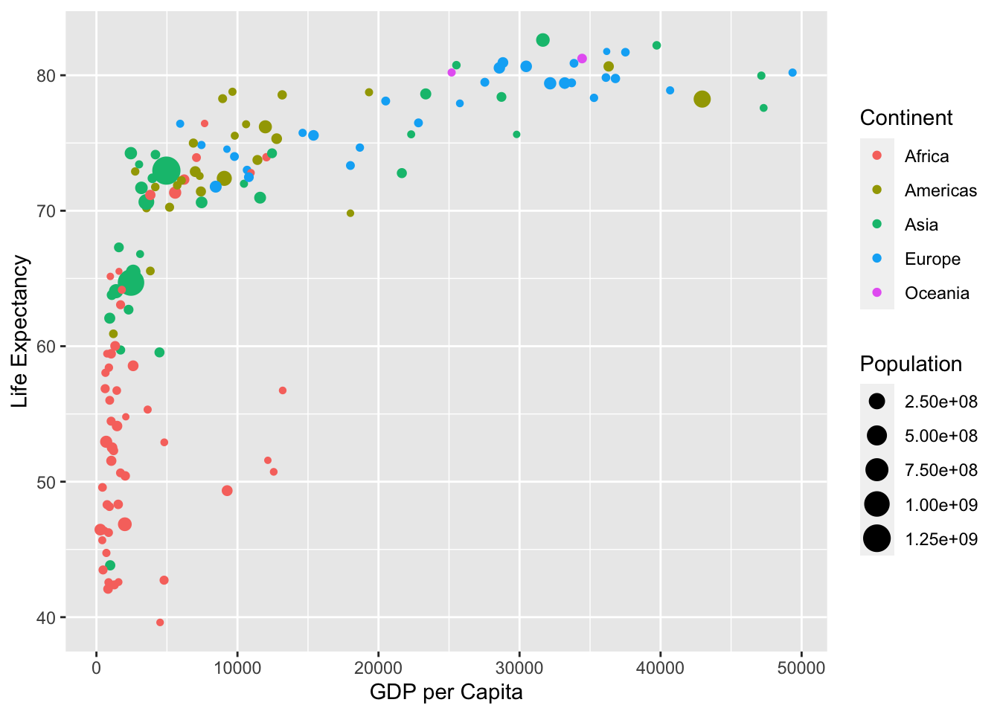
Figure 4.1: Espérance de vie en fonction du PIB par habitant en 2007.
Si on décrypte ce graphique du point de vue de la grammaire des graphiques, on voit que :
la variable GDP per Capita est associée à l’aesthetic x de la position des points
la variable Life Expectancy est associée à l’aesthetic y de la position des points
la variable Population est associée à l’aesthetic size (taille) des points
la variable Continent est associée à l’aesthetic color (couleur) des points
Ici, l’objet géométrique (ou geom) qui représente les données est le point. Les données (ou data) sont contenues dans le tableau gapminder et chacune de ces variables est associée (mapping) aux caractéristiques esthétiques des points.
4.2.3 Autres éléments de la grammaire des graphiques
Outre les éléments indispensables évoqués ici (data, mapping, aes, et geom), il existe d’autres aspects de la grammaire des graphiques qui permettent de contrôler l’aspect des graphiques. Ils ne sont pas toujours indispensables. Nous en verrons néanmoins quelque-uns particulièrement utiles :
facet : c’est un moyen très pratique de scinder le jeu de données en plusieurs sous-groupes et de produire automatiquement un graphique pour chacun d’entre eux.
position : permet notamment de modifier la position des barres d’un barplot.
labs : permet de définir les titres, sous-titres et légendes des axes d’un graphique
theme : permet de modifier l’apect général des graphiques en appliquant des thèmes prédéfinis ou en modifiant certains aspects de thèmes existants
4.2.4 Le package ggplot2
Comme indiqué plus haut, le package ggplot2(Wickham et al. 2023) permet de réaliser des graphiques dans R en respectant les principes de la grammaire des graphiques. Vous avez probablement remarqué que depuis le début de la Section 4.2, beaucoup de termes sont écrits dans la police réservée au code informatique. C’est parce que les éléments de la grammaire des graphiques sont tous précisés dans la fonction ggplot() qui demande, au grand minimum, que les éléments suivants soient spécifiés :
le nom du data.frame contenant les variables qui seront utilisées pour le graphique. Ce nom correspond à l’argument data de la fonction ggplot().
l’association des variables à des attributs esthétiques. Cela se fait grâce à l’argument mapping et la fonction aes()
Après avoir spécifié ces éléments, on ajoute des couches supplémentaires au graphique grâce au signe +. La couche la plus essentielle à ajouter à un graphique, est une couche contenant un élément géométrique, ou geom (par exemple des points, des lignes ou des barres). D’autres couches peuvent s’ajouter pour spécifier des titres, des facets ou des modifications des axes et des thèmes du graphique.
Dans le cadre de ce cours, nous nous limiterons aux 5 types de graphiques suivants :
les nuages de points
les graphiques en lignes
les boîtes à moustaches ou boxplots
les histogrammes
les diagrammes bâtons
4.3 Les nuages de points
C’est probablement le plus simple des 5 types de graphiques cités plus haut. Il s’agit de graphiques bi-variés pour lesquels une variable est associée à l’axe des abscisses, et une autre est associée à l’axe des ordonnées. Comme pour le graphique présenté à la Figure 4.1 ci-dessus, d’autres variables peuvent être associées à des caractéristiques esthétiques des points (transparence, taille, couleur, forme…).
Ici, dans le jeu de données flights, nous allons nous intéresser à la relation qui existe entre :
dep_delay : le retard des vols au décollage, que nous placerons sur l’axe des “x”
arr_delay : le retard des mêmes vols à l’atterrissage, que nous placerons sur l’axe des “y”
Afin d’avoir un jeu de données plus facile à utiliser, nous nous contenterons de visualiser les vols d’Alaska Airlines, dont le code de compagnie aérienne est "AS".
Il est normal que vous ne compreniez pas encore les commandes ci-dessus : elles seront décrites dans le Chapitre 6. Retenez juste que nous avons créé un nouveau tableau, nommé alaska_flights, qui contient toutes les informations des vols d’Alaska Airlines. Commencez par examiner ce tableau avec la fonction View(). En quoi est-il différent du tableau flights ?
4.3.1 La couche de base : la fonction ggplot()
La fonction ggplot() permet d’établir la première base du graphique. C’est grâce à cette fonction que l’on précise quel jeu de données utiliser et quelles variables placer sur les axes :
ggplot(data = alaska_flights, mapping =aes(x = dep_delay, y = arr_delay))
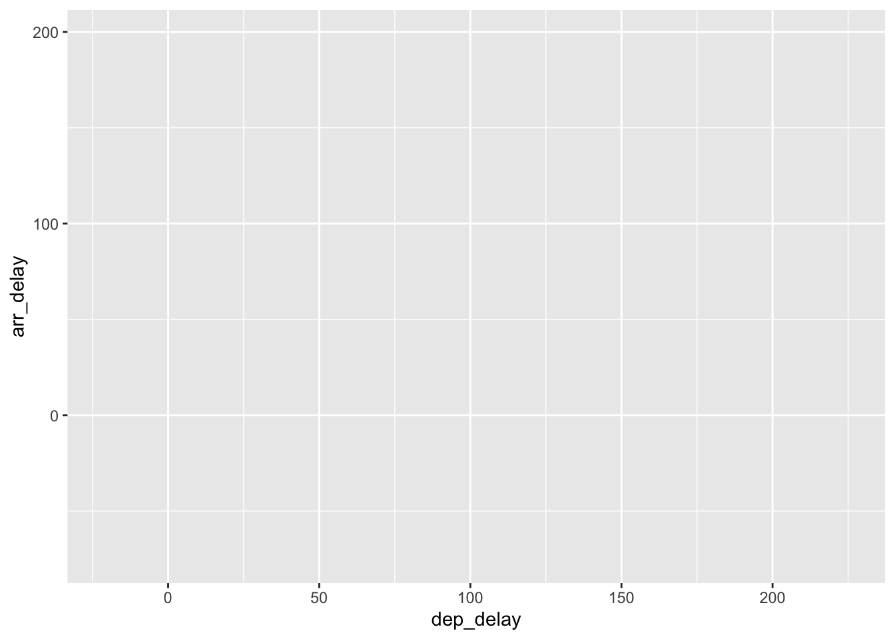
Figure 4.2: Un graphique sans geom.
Ce graphique est pour le moins vide : c’est normal, nous n’avons pas encore spécifié la couche contenant l’objet géométrique que nous souhaitons utiliser.
4.3.2 Ajout d’une couche supplémentaire : l’objet géométrique
Les nuages de points sont créés par la fonction geom_point() :
Figure 4.3: Retards à l’arrivée en fonction des retards au décollage pour les vols d’Alaska Airlines au départ de New York City en 2013.
Plusieurs choses importantes sont à remarquer sur la Figure 4.3 :
le graphique présente maintenant une couche supplémentaire constituée de points.
la fonction geom_point() nous prévient que 5 lignes contenant des données manquantes n’ont pas été intégrées au graphique. Les données manquent soit pour une variable, soit pour l’autre, soit pour les 2. Il est donc impossible de les faire apparaître sur le graphique.
il existe une relation positive entre dep_delay et arr_delay : quand le retard d’un vol au décollage augmente, le retard de ce vol augmente aussi à l’arrivée.
Enfin, il y a une grande majorité de points centrés près de l’origine (0,0).
Si je résume cette syntaxe :
Au sein de la fonction ggplot(), on spécifie 2 composants de la grammaire des graphiques :
le nom du tableau contenant les données grâce à l’argument data = alaska_flights
l’association (mapping) des variables à des caractéristiques esthétiques (aes()) en précisant aes(x = dep_delay, y = arr_delay) :
la variable dep_delay est associée à l’esthétique de position x
la variable arr_delay est associée à l’esthétique de position y
On ajoute une couche au graphique ggplot() grâce au symbole +. La couche en question précise le troisème élément indispensable de la grammaire des graphiques : l’objet geométrique. Ici, les objets sont des points. On le spécifie grâce à la fonction geom_point().
Quelques remarques concernant les couches :
Notez que le signe + est placé à la fin de la ligne. Vous recevrez un message d’erreur si vous le placez au début.
Quand vous ajoutez une couche à un graphique, je vous encourage vivement à presser la touche enter de votre clavier juste après le symbole +. Ainsi, le code correspondant à chaque couche sera sur une ligne distincte, ce qui augmente considérablement la lisibilité de votre code.
Comme indiqué dans la Section 2.3.4.3, tant que les arguments d’une fonction sont spécifiés dans l’ordre, on peut se passer d’écrire leur nom. Ainsi, les deux blocs de commande suivants produisent exactement le même résultat :
# Le nom des arguments est préciséggplot(data = alaska_flights, mapping =aes(x = dep_delay, y = arr_delay)) +geom_point()# Le nom des arguments est omisggplot(alaska_flights, aes(x = dep_delay, y = arr_delay)) +geom_point()
4.3.3 Exercices
Donnez une raison pratique expliquant pourquoi les variables dep_delay et arr_delay ont une relation positive
Quelles variables (pas nécessairement dans le tableau alaska_flights) pourraient avoir une corrélation négative (relation négative) avec dep_delay ? Pourquoi ? Rappelez-vous que nous étudions ici des variables numériques.
Selon vous, pourquoi tant de points sont-il regroupés près de (0, 0) ? À quoi le point (0,0) correspond-il pour les vols d’Alaska Airlines ?
Citez les éléments de ce graphique/de ces données qui vous sautent le plus aux yeux ?
Créez un nouveau nuage de points en utilisant d’autres variables du jeu de données alaska_flights
4.3.4 Over-plotting
L’over-plotting est la superposition importante d’une grande quantité d’information sur une zone restreinte d’un graphique. Dans notre cas, nous observons un over-plotting important autour de (0,0). Cet effet est gênant car il est difficile de se faire une idée précise du nombre de points accumulés dans cette zone. La façon la plus simple de régler le problème est de modifier la transparence des points grâce à l’argument alpha de la fonction geom_point(). Par défaut, cette valeur est fixée à 1, pour une opacité totale. Une valeur de 0 rend les points totalement transparents, et donc invisibles. Trouver la bonne valeur peut demander de tâtonner un peu. Le code suivant produit la Figure 4.4 :
Figure 4.4: La même figure, avec des points semi-transparents.
Sur cette figure, notez que :
la transparence est additive : plus il y a de points, plus la zone est foncée car les points se superposent et rendent la zone plus opaque.
l’argument alpha = n’est pas intégré à l’intérieur d’une fonction aes() car ici, il n’est pas associé à une variable : c’est un simple paramètre.
L’over-plotting est souvent rencontré lorsque l’on représente plusieurs nuages de points pour les différentes valeurs d’une variable catégorielle. Par exemple, si on transforme la variable month en facteur (factor(month)), on peut regarder s’il existe une relation entre les retards à l’atterrissage et le mois de l’année :
ggplot(data = alaska_flights, mapping =aes(x =factor(month), y = arr_delay)) +geom_point()
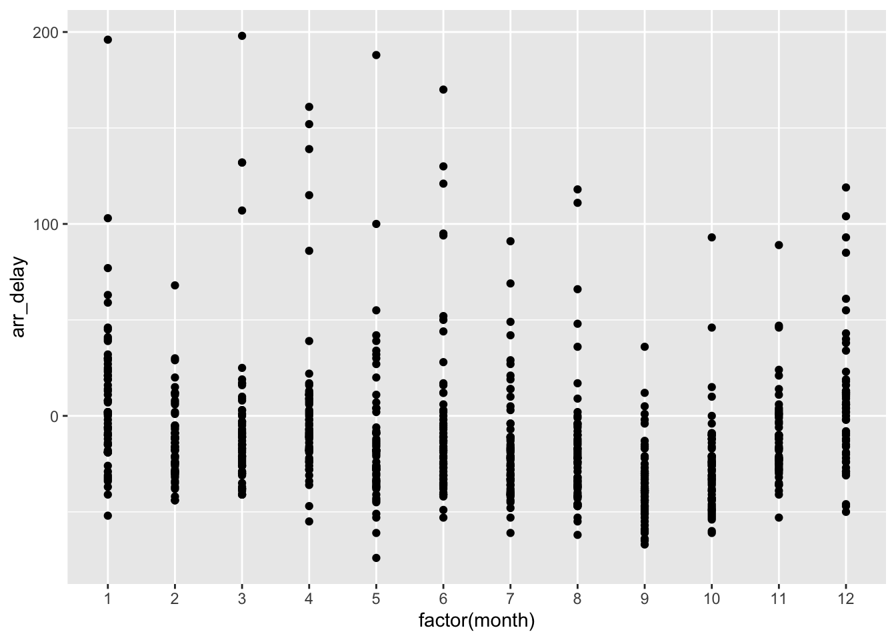
Figure 4.5: Retards à l’arrivée pour les 12 mois de l’année 2013.
Ici (Figure 4.5), l’ajout de transparence ne serait pas suffisant. Une autre solution est d’appliquer la méthode dite du “jittering”, ou tremblement. Elle consiste à ajouter un bruit aléatoire horizontal et/ou vertical aux points d’un graphique. Ici, on peut ajouter un léger bruit horizontal afin de disperser un peu les points pour chaque mois de l’année. On n’ajoute pas de bruit vertical car on ne souhaite pas que les valeurs de retard (sur l’axe des y) soient altérées :
Figure 4.6: Retards à l’arrivée pour les 12 mois de l’année 2013.
On y voit déjà plus clair. L’argument width permet de spécifier l’intensité de la dispersion horizontale. Pour ajouter du bruit vertical (ce qui n’est pas souhaitable ici !), on peut ajouter l’argument height. Le graphique de la Figure 4.6 est parfois appelé un **stripchart*“**. C’est un graphique du type “nuage de points”, mais pour lequel l’une des 2 variables est numérique, et l’autre est catégorielle.
Il est évidemment possible d’ajouter de la transparence :
Figure 4.7: Retards à l’arrivée pour les 12 mois de l’année 2013.
4.3.5 Couleur, taille et forme
L’argument color (ou colour, les deux orthographes fonctionnent) permet de spécifier la couleur des points. L’argument size permet de spécifier la taille des points. L’argument shape permet de spécifier la forme utilisée en guise de symbole. Ces 3 arguments peuvent être utilisés comme des paramètres, pour modifier l’ensemble des points d’un graphique. Mais ils peuvent aussi être associés à une variable, pour apporter une information supplémentaire.
Figure 4.8: Où mettre color ? À l’intérieur ou à l’extérieur de aes() ?
Le code qui permet de produire la Figure 4.8 (a) fait un usage correct de l’argument color. On demande des points de couleur bleue, les points apparaissent bleus. La figure Figure 4.8 (b) en revanche ne produit pas le résultat attendu. Puisque nous avons mis l’argument color à l’intérieur de la fonction aes(), R s’attend à ce que la couleur soit associée à une variable. Il crée donc artificiellement une variable nommée blue qu’il associe à chaque point de notre graphique et il crée nue légende à laquelle il associe la couleur par défaut. Cette façon de procéder est donc incorrecte. Pour associer la couleur des points à une variable, nous devons fournir un nom de variable valide :
Figure 4.9: Association de color à une variable catégorielle.
Ici, l’utilisation de la couleur est correcte. Elle est associée à une variable catégorielle, et chaque valeur possible du vecteur month se voit donc attribuer une couleur différente.
Figure 4.10: Association de color à une variable numérique continue.
De la même façon, la couleur des points est ici associée à une variable continue (l’heure d’arrivée des vols). Les points se voient donc attribuer une couleur choisie le long d’un gradient.
La même approche peut être utilisée pour spécifier la forme des symboles avec l’argument shape. Attention toutefois : une variable continue ne peut pas être associée à shape
Vous noterez que seuls les 6 premiers niveaux d’un facteur se voient attribuer une forme automatiquement. Au delà de 6 symboles différents sur un même graphique, le résultat est souvent illisible. Il est possible d’ajouter plus de 6 symboles, mais cela demande de modifier la légende manuellement et concrètement nous n’en aurons jamais besoin. Lorsque plus de 6 séries doivent être distinguées, d’autres solutions bien plus pertinentes (par exemple les factets) devraient être utilisées.
Comme pour la couleur, il est possible d’utiliser l’argument shape en tant que paramètre du graphique sans l’associer à une variable. Il faut alors fournir un code compris entre 0 et 24 :
Figure 4.12: Utilisation de shape en tant que paramètre.
Notez qu’ici, ggplot() ne crée pas de légende : tous les points ont le même symbole, ce symbole n’est pas associé à une variable, une légende est donc inutile.
Parmi les valeurs possibles pour shape, les symboles 21 à 24 sont des symboles dont on peut spécifier séparément la couleur de contour, avec color et la couleur de fond avec fill :
ggplot(data = alaska_flights, mapping =aes(x = dep_delay, y = arr_delay)) +geom_point(shape =21, fill ="steelblue", color ="orange", alpha =0.5)
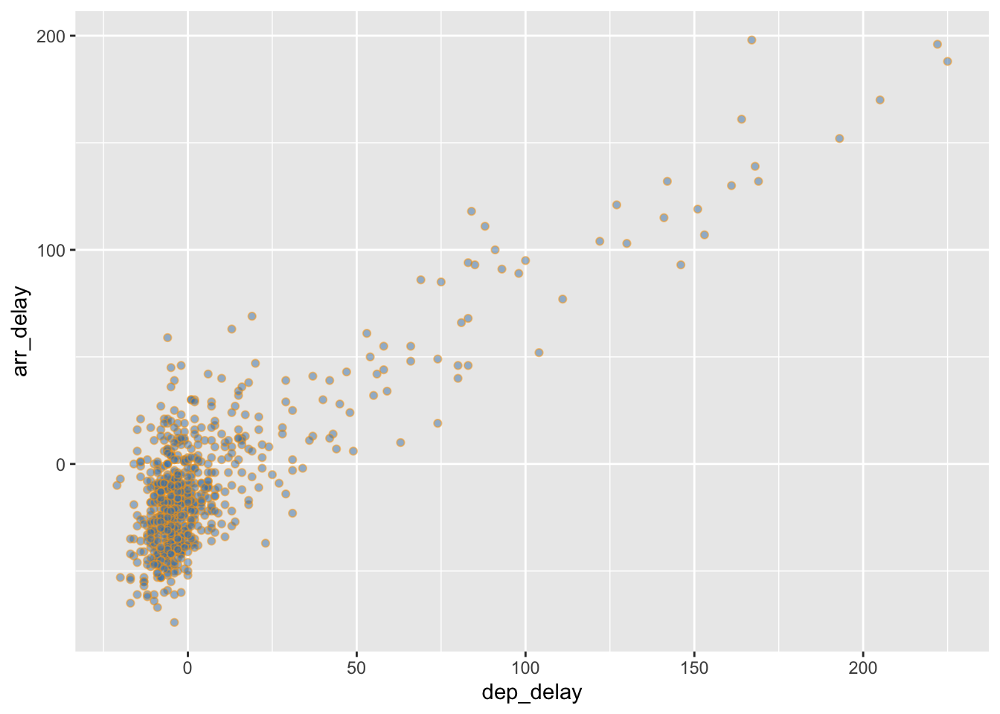
Figure 4.13: Utilisation de shape, color et fill.
N’hésitez pas à zoomer pour bien observer les points et comprendre ce qui se passe. Un conseil, faites des choix raisonnables ! Trop de couleurs n’est pas forcément souhaitable.
Enfin, on peut ajuster la taille des symboles avec l’argument size. Tout comme il n’est pas possible d’associer une variable continue à shape, il n’est pas conseillé d’associer une variable catégorielle nominale (c’est-à-dire un facteur non ordonné) à size. Associer une variable continue est en revanche parfois utile :
Figure 4.14: Association d’une variable continue à la taille des symboles avec l’argument size.
Ce type de graphique est un “bubble plot”. Si l’over-plotting est ici très important (c’est pourquoi j’ai utilisé alpha), on constate néanmoins que les vols avec les retards les plus importants sont presque tous arrivés très tôt dans la journée (“500” signifie 5h00 du matin). Il s’agit probablement de vols qui devaient arriver dans la nuit, avant minuit, et qui sont finalement arrivés en tout début de journée, entre 00h01 et 5h00 du matin. Comme pour les autres arguments, il est possible d’utiliser size avec une valeur fixe, la même pour tous les symboles, lorsque cet argument n’est pas associé à une variable.
Enfin un conseil : évitez de trop surcharger vos graphiques. En combinant l’ensemble de ces arguments, il est malheureusement très facile d’obtenir des graphiques peu lisibles, ou contenant tellement d’informations qu’ils en deviennent difficiles à déchiffrer. Faites preuve de modération :
Avec le jeu de données diamonds, tapez les commandes suivantes pour créer un nouveau tableau diams contenant moins de lignes (5000 au lieu de près de 54000) :
library(dplyr)set.seed(4532) # Afin que tout le monde récupère les mêmes lignesdiams <- diamonds |>sample_n(5000)
Avec ce nouveau tableau diams, tapez le code permettant de créer le graphique Figure 4.16 (Indice : affichez le tableau diams dans la console afin de voir quelles sont les variables disponibles).
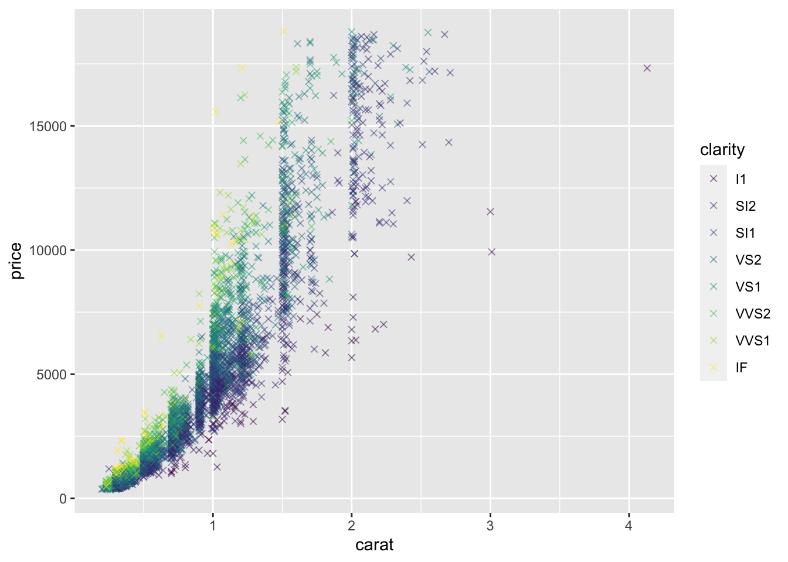
Figure 4.16: Prix de 5000 diamants en fonction de leur taille en carats et de leur clarté.
Selon vous, à quoi sont dues les bandes verticales que l’on observe sur ce graphique ?
4.4 Les graphiques en lignes
4.4.1 Un nouveau jeu de données
Les graphiques en ligne, ou “linegraphs” sont généralement utilisés lorsque l’axe des x porte une information temporelle, et l’axe des y une autre variable numérique. Le temps est une variable naturellement ordonnée : les jours, semaines, mois, années, se suivent naturellement. Les graphiques en lignes devraient être évités lorsqu’il n’y a pas une organisation séquentielle évidente de la variable portée par l’axe des x.
Concentrons nous maintenant sur le tableau weather du package nycflights13. Explorez ce tableau en appliquant les méthodes vues dans le Chapitre 3. N’oubliez pas de consultez l’aide de ce jeu de données.
Nous allons nous intéresser à la variable temp, qui contient un enregistrement de température pour chaque heure de chaque jour de 2013 pour les 3 aéroports de New York. Cela représente une grande quantité de données, aussi, nous nous limiterons aux températures observées entre le premier et le 15 janvier, pour l’aéroport Newark uniquement.
small_weather <- weather |>filter(origin =="EWR", month ==1, day <=15)
La fonction filter() fonctionne sur le même principe que la fonction subset() découverte dans les tutoriels de DataCamp. Ici, nous demandons à R de créer un nouveau tableau de données, nommé small_weather, qui ne contiendra que les lignes correspondant à origin == "EWR", month == 1 et day <= 15, c’est à dire les données météorologiques de l’aéroport de Newark pour les 15 premiers jours de janvier 2013.
4.4.2 Exercice
Avec View(), consultez le tableau nouvellement créé. Expliquez pourquoi la variable time_hour identifie de manière unique le moment ou chaque mesure a été réalisée alors que ce n’est pas le cas de la variable hour.
4.4.3 La fonction geom_line()
Les line graphs sont produits de la même façon que les nuages de points. Seul l’objet géométrique permettant de visualiser les données change. Au lieu d’utiliser geom_point(), on utilisera geom_line() :
Figure 4.17: Températures horaires à l’aéroport de Newark entre le 1er et le 15 janvier 2013.
Très logiquement, on observe des oscillations plus ou moins régulières qui correspondent à l’alternance jour/nuit. Notez l’échelle de l’axe des ordonnées : les températures sont enregistrées en degrés Fahrenheit.
Nous connaissons maintenant 2 types d’objets geométriques : les points et les lignes. Il est tout à fait possible d’ajouter plusieurs couches à un graphique, chacune d’elle correspondant à un objet geométrique différent (voir Figure 4.18) :
Figure 4.18: Températures horaires à l’aéroport de Newark entre le 1er et le 15 janvier 2013
Enfin, comme pour les points, il est possible de spécifier plusieurs caractéristiques esthétiques des lignes, soit en les associant à des variables, au sein de la fonction aes(), soit en les utilisant en guise de paramètres pour modifier l’aspect général. Les arguments les plus classiques sont une fois de plus color (ou colour) pour modifier la couleur des lignes, linetype pour modifier le type de lignes (continues, pointillées, tirets, etc), et linewidth pour modifier l’épaisseur des lignes.
Reprenons le jeu de données complet weather, et filtrons uniquement les dates comprises entre le premier et le 15 janvier, mais cette fois pour les 3 aéroports de New York :
small_weather_airports <- weather |>filter(month ==1, day <=15)
Nous pouvons maintenant réaliser un “linegraph” sur lequel une courbe apparaîtra pour chaque aéroport. Pour cela, nous devons associer la variable origin à un attribut esthétique des lignes. Par exemple (Figure 4.19) :
Figure 4.21: Températures horaires des 3 aéroports de New York entre le 1er et le 15 janvier 2013.
4.4.4 À quel endroit placer aes() et les arguments color, size, etc. ?
Jusqu’à maintenant, pour spécifier les associations entre certaines variables et les caractéristiques esthétiques d’un graphique, nous avons été amenés à utiliser la fonction aes() à 2 endroits distincts :
au sein de la fonction ggplot()
au sein des fonctions geom_XXX()
Comment choisir l’endroit où renseigner aes() ? Pour bien comprendre, reprenons l’exemple de la Figure 4.18 sur lequel nous avions ajouté 2 couches contenant chacune un objet géométrique différent (afin de gagner de la place, j’omets volontairement le nom des arguments data et mapping dans la fonction ggplot()) :
ggplot(small_weather, aes(x = time_hour, y = temp)) +geom_line() +geom_point()
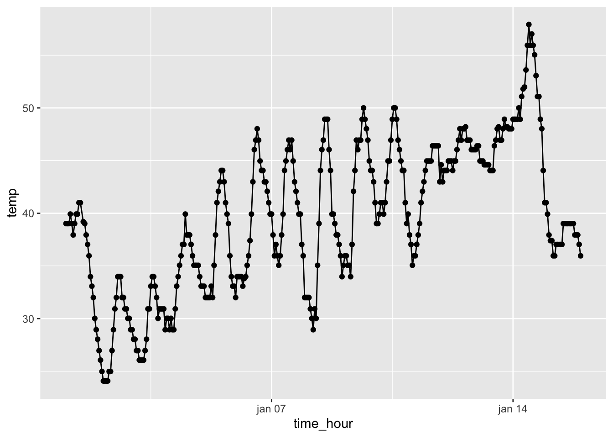
Figure 4.22: Températures horaires à l’aéroport de Newark entre le 1er et le 15 janvier 2013.
Voyons ce qui se passe si on associe la variable wind_speed à l’esthétique color, à plusieurs endroits du code ci-dessus. Comparez les trois syntaxes et observez les différences entre les 3 graphiques obtenus :
ggplot(small_weather, aes(x = time_hour, y = temp, color = wind_speed)) +geom_line() +geom_point()
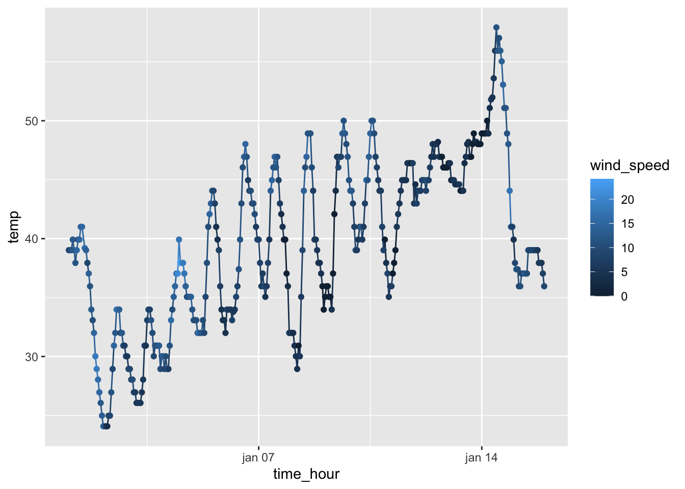
Figure 4.23: Températures horaires et vitesse du vent à l’aéroport de Newark entre le 1er et le 15 janvier 2013. La couleur de la ligne et des points renseigne sur la vitesse du vent.
Figure 4.24: Températures horaires et vitesse du vent à l’aéroport de Newark entre le 1er et le 15 janvier 2013. La couleur de la ligne renseigne sur la vitesse du vent.
Figure 4.25: Températures horaires et vitesse du vent à l’aéroport de Newark entre le 1er et le 15 janvier 2013. La couleur des points renseigne sur la vitesse du vent.
Vous l’aurez compris, lorsque l’on spécifie aes() à l’intérieur de la fonction ggplot(), les associations de variables et d’esthétiques sont appliquées à tous les objets géométriques, donc à toutes les autres couches. En revanche, quand aes() est spécifié dans une couche donnée, les réglages ne s’appliquent qu’à cette couche spécifique.
En l’occurrence, si le même réglage est spécifié dans la fonction ggplot() et dans une fonction geom_XXX(), c’est le réglage spécifié dans l’objet géométrique qui l’emporte :
ggplot(small_weather, aes(x = time_hour, y = temp, color = wind_speed)) +geom_line(color ="orange") +geom_point()
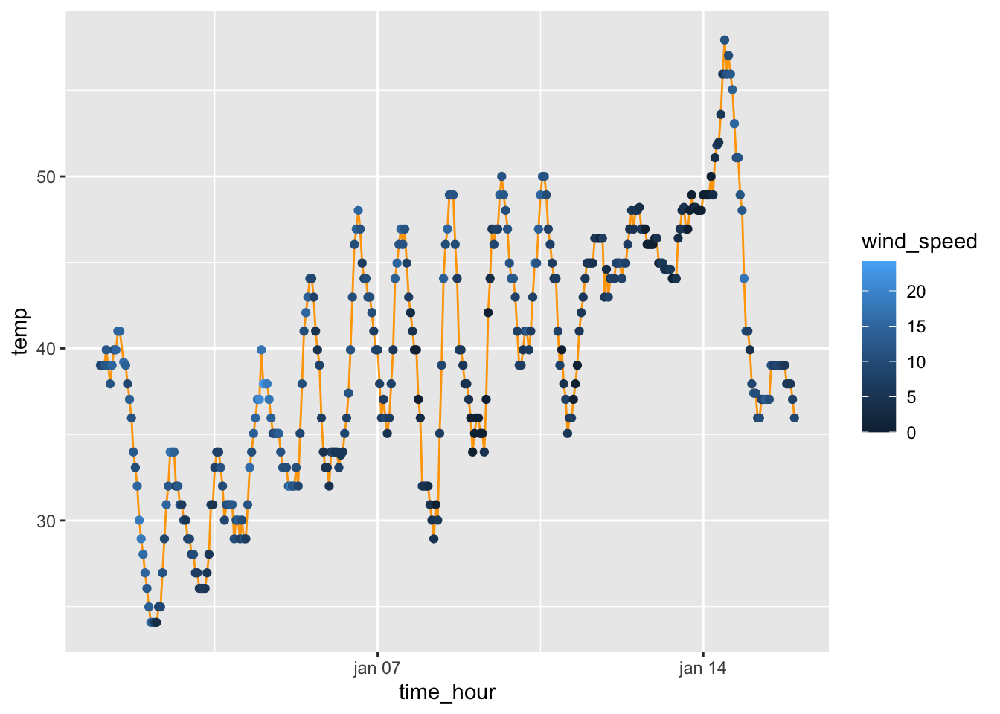
Figure 4.26: Températures horaires et vitesse du vent à l’aéroport de Newark entre le 1er et le 15 janvier 2013.
Il est ainsi possible de spécifier des éléments esthétiques qui s’appliqueront à toutes les couches d’un graphique, et d’autres qui ne s’appliqueront qu’à une couche spécifique, qu’à un objet géométrique particulier.
4.5 Les histogrammes
Un histogramme permet de visualiser la distribution d’une variable numérique continue. Contrairement aux deux types de graphiques vus précédemment, il sera donc inutile de préciser la variable à associer à l’axe des ordonnées : R la calcule automatiquement pour nous lorsque nous faisons appel à la fonction geom_histogram() pour créer un objet géométrique “histogramme”.
4.5.1 L’objet geom_histogram()
Si on reprend le jeu de données weather, on peut par exemple s’intéresser à la distribution des températures tout au long de l’année :
ggplot(weather, aes(x = temp)) +geom_histogram()
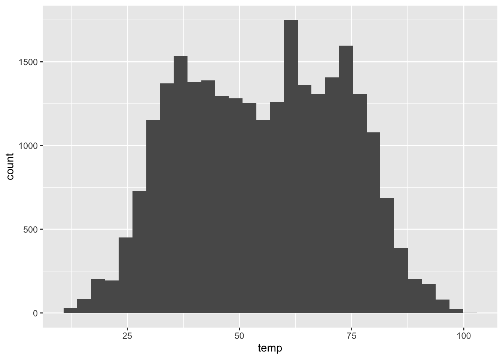
Figure 4.27: Histogramme des températures enregistrées en 2013 dans les 3 aéroports de New York.
On observe plusieurs choses :
La distribution semble globalement bimodale avec un pic autour de 36-37 degrés Fahrenheit (2 à 3 ºC) et un autre autour de 65-70 degrés Fahrenheit (18-21 ºC).
Les températures ont varié entre 12 degrés Fahrenheit (-11ºC) et 100 degrés Fahrenheit (près de 38ºC).
R nous avertit qu’une valeur non finie n’a pas pu être intégrée.
R nous indique qu’il a choisi de représenter 30 classes de températures (bins = 30). C’est la valeur par défaut. R nous conseille de choisir une valeur plus appropriée.
Comme pour les nuages de points utilisant les symboles 21 à 24, il est possible de spécifier la couleur de remplissage des barres avec l’argument fill et la couleur du contour des barres avec l’argument color :
ggplot(weather, aes(x = temp)) +geom_histogram(fill ="steelblue", color ="grey80")
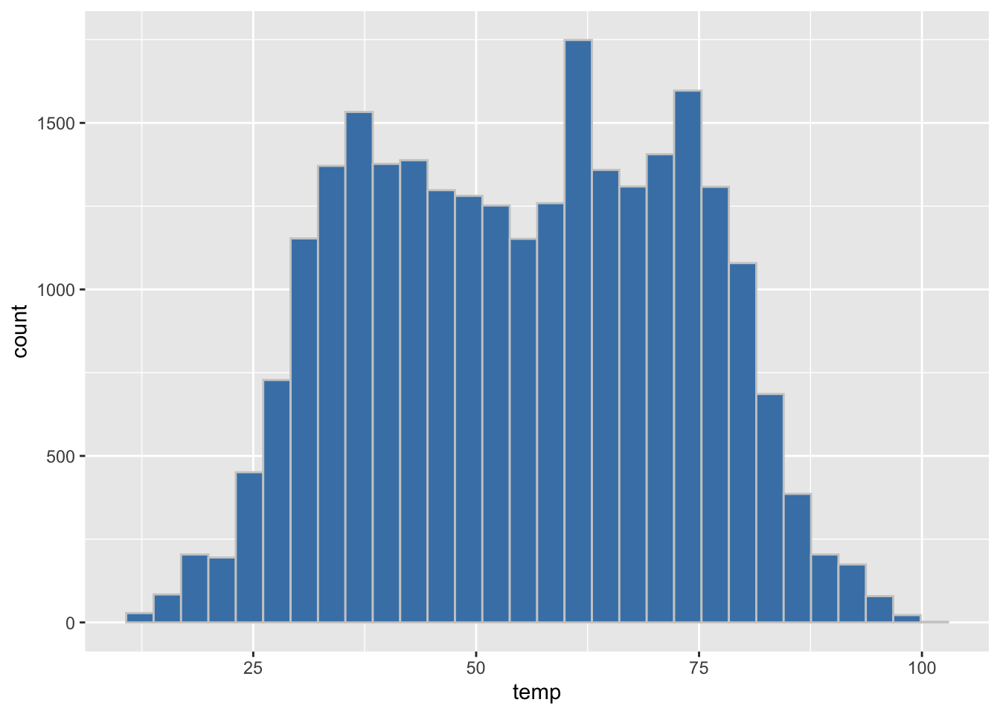
Figure 4.28: Utilisation des arguments fill et color pour modifier l’aspect de l’histogramme.
4.5.2 La taille des classes
Par défaut, R choisit arbitrairement de représenter 30 classes. Ce n’est que rarement le bon choix, et il est souvent nécessaire de tâtonner pour trouver le nombre de classes approprié : celui qui permet d’avoir une idée correcte de la distribution des données.
Il est possible d’ajuster les caractéristiques des classes de l’histogramme de l’une des 3 façons suivantes :
En ajustant le nombre de classes avec bins.
En précisant la largeur des classes avec binwidth.
En fournissant manuellement les limites des classes avec breaks.
ggplot(weather, aes(x = temp)) +geom_histogram(bins =60, color ="white")
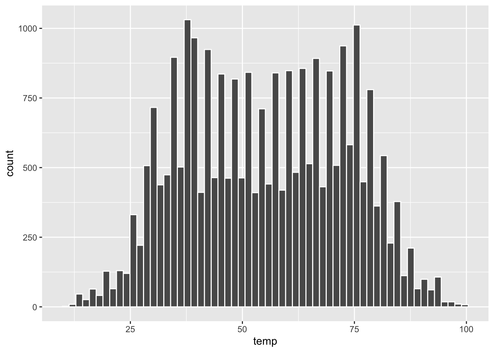
Figure 4.29: Modification du nombre de classes.
Ici, augmenter le nombre de classes à 60 permet de prendre conscience que la distribution n’est pas aussi lisse qu’elle en avait l’air. L’ajout d’une couche supplémentaire avec la fonction geom_rug() (“a rug” est un tapis en français) permet de prendre conscience que les données de température ne sont pas aussi continues qu’on pouvait le croire (figure Figure 4.30) :
ggplot(weather, aes(x = temp)) +geom_histogram(bins =60, color ="white") +geom_rug(alpha =0.1)
Figure 4.30: Ajout des données brutes sous forme de ‘tapis’ (rug) sous l’histogramme.
Notez la transparence importante utilisée pour geom_rug(). On constate que la précision des relevés de température n’est en fait que de quelques dixièmes de degrés.
On peut également modifier la largeur des classes avec binwidth :
ggplot(weather, aes(x = temp)) +geom_histogram(binwidth =10, color ="white")
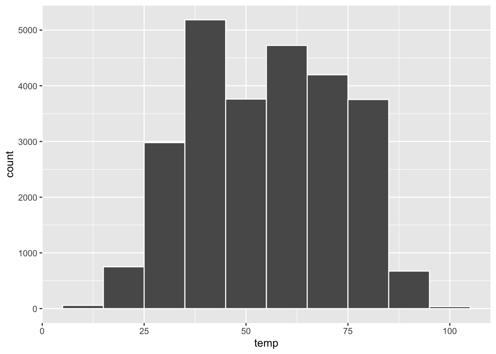
Figure 4.31: Modification de la largeur des classes avec binwidth.
Ici, chaque catégorie recouvre 10 degrés Fahrenheit, ce qui est probablement trop large puisque la bimodalité de la distribution est devenue presque invisible.
Enfin, il est possible de déterminer manuellement les limites des classes souhaitées avec l’argument breaks (Figure 4.32) :
Figure 4.32: Spécification manuelle des limites de classes de tailles (classes irrégulières).
Vous constatez ici que les choix effectués ne sont pas très pertinents : toutes les classes n’ont pas la même largeur. Cela rend l’interprétation difficile. Il est donc vivement conseillé, pour spécifier breaks, de créer des suites régulières, comme avec la fonction seq() (consultez son fichier d’aide et les exemples) :
ggplot(weather, aes(x = temp)) +geom_histogram(breaks = limits, color ="white")
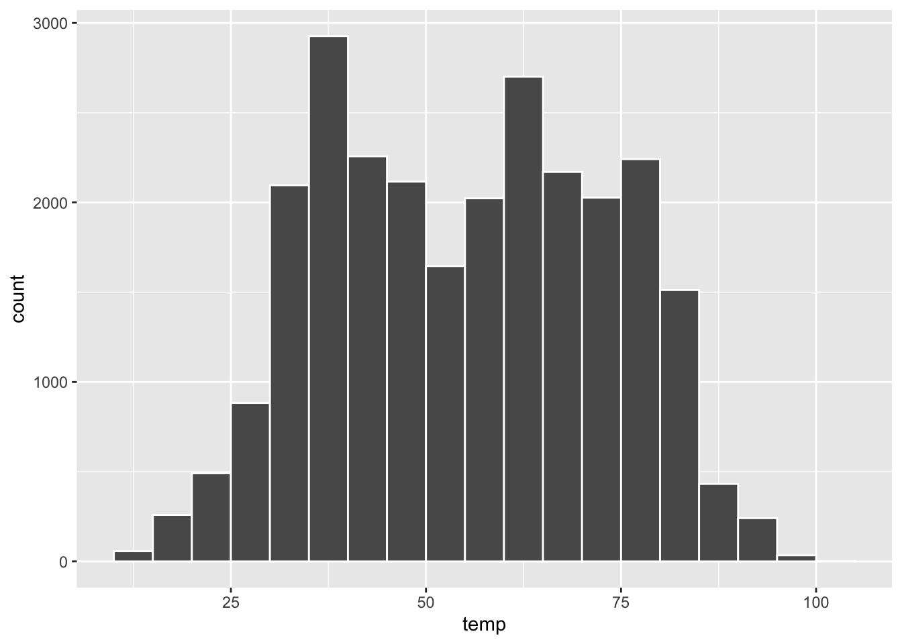
Figure 4.33: Un exemple d’utilisation de l’argument breaks.
Il est important que toute la gamme des valeurs de temp soit couverte par les limites des classes que nous avons définies, sinon, certaines valeurs sont omises et l’histogramme est donc incomplet/incorrect. Une façon de s’en assurer est d’afficher le résumé des données pour la colonne temp du jeu de données weather :
summary(weather$temp)
Min. 1st Qu. Median Mean 3rd Qu. Max. NA's
10.94 39.92 55.40 55.26 69.98 100.04 1
On voit ici que les températures varient de 10.94 à 100.04 degrés Fahrenheit. Les classes que nous avons définies couvrent une plage de températures plus large (de 10 à 105). Toutes les données sont donc bien intégrées à l’histogramme.
4.5.3 Les densités
Une façon de s’affranchir (presque) complètement de cette question de largeur des classes de tailles et de représenter les distributions sous forme de courbes de densités :
ggplot(weather, aes(x = temp)) +geom_density()
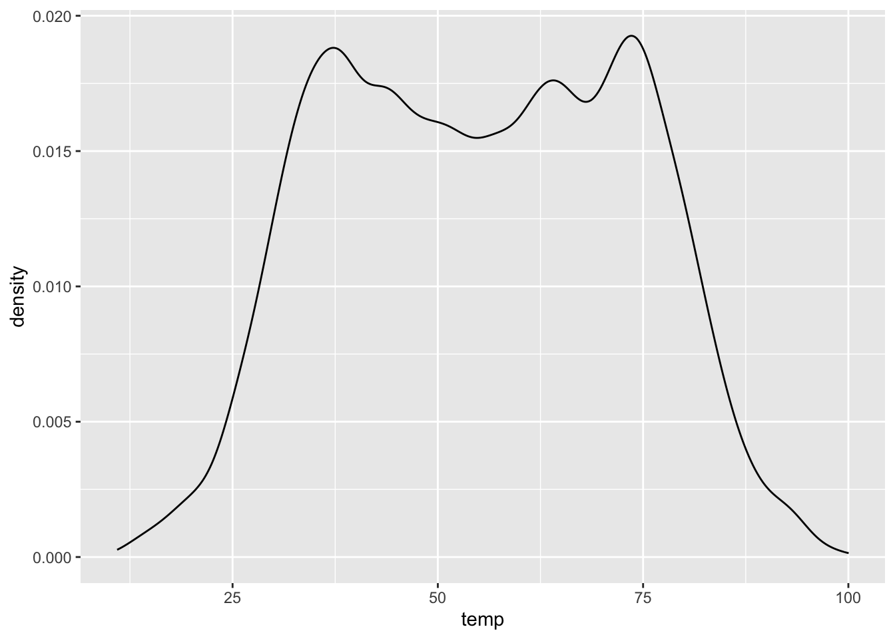
Figure 4.34: Un exemple de courbe de densité
Ici, la courbe reflète non pas la fréquence des données dans des classes de tailles, mais leur densité, c’est à dire que la surface totale sous la courbe vaut 1 (d’où l’échelle étrange sur l’axe des ordonnées). C’est une extension continue de l’histogramme par nature discontinu. On repère bien ici les 2 pics identifiés précédemment qui correspondent à des densités de données plus fortes pour les températures de 30 et 70 degrés Fahrenheit environ. La courbe possède un paramètre de lissage (bw pour “bandwidth”) qui équivaut un peu à la largeur des classes de taille d’un histogramme :
Figure 4.36: La même courbe de densité mais trop lissée
Ici, la courbe est trop lissée donc toute la structure des données disparaît. En règle générale, la valeur choisie par défaut par geom_density() pour le paramètre bw est tout à fait satisfaisante. Il est donc rare que l’utilisateur ait à modifier manuellement cette valeur.
4.6 Les facets
4.6.1facet_wrap()
Nous l’avons indiqué plus haut, les facets permettent de scinder le jeu de données en plusieurs sous-groupes et de faire un graphique pour chacun des sous-groupes.
Ainsi, si l’on souhaite connaître la distribution des températures pour chaque mois de l’année 2013, plutôt que de faire ceci :
ggplot(weather, aes(x = temp, fill =factor(month))) +geom_histogram(bins =20, color ="grey30")
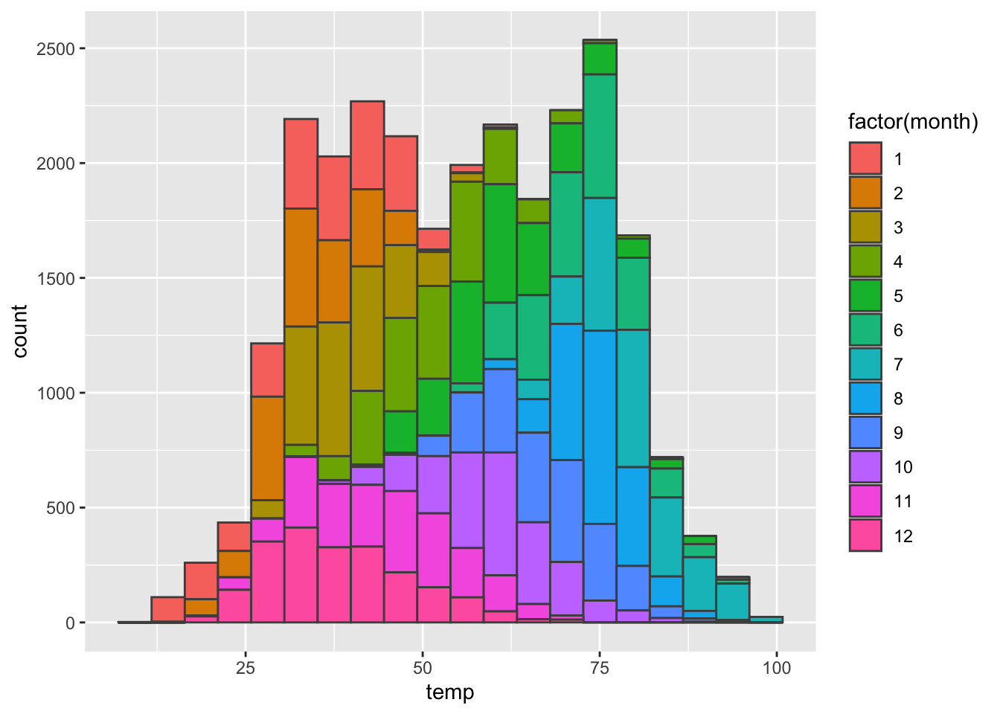
Figure 4.37: Distribution des températures avec visualisation des données mensuelles
qui produit un graphique certes assez joli, mais difficile à interpréter, mieux vaut faire ceci :
ggplot(weather, aes(x = temp, fill =factor(month))) +geom_histogram(bins =20, color ="grey30") +facet_wrap(~factor(month), ncol =3)
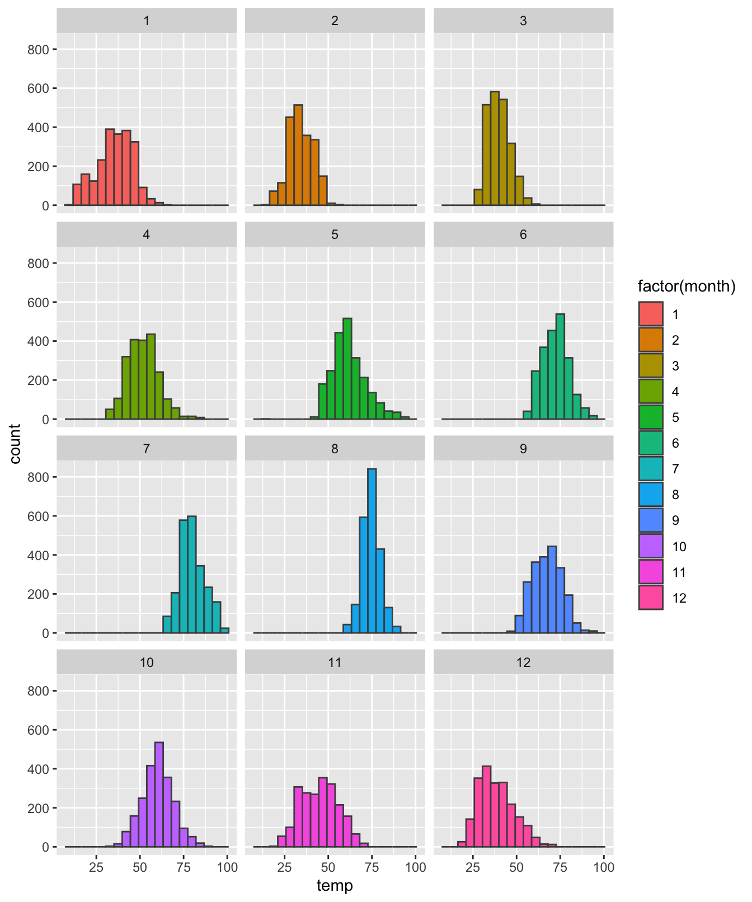
Figure 4.38: Un exemple d’utilisation de facet_wrap().
La couche supplémentaire créée avec facet_wrap() permet donc de scinder les données en fonction d’une variable. Attention à la syntaxe : il ne faut pas oublier le symbole “~” devant la variable que l’on souhaite utiliser pour scinder les données. Il va sans dire que la variable utilisée doit être catégorielle et non continue, c’est la raison pour laquelle j’utilise la notation factor(month) et non simplement month.
Avec la fonction facet_wrap(), il est possible d’indiquer à R comment les différents graphiques doivent être agencés en spécifiant soit le nombre de colonnes souhaité avec ncol, soit le nombre de lignes souhaité avec nrow.
4.6.2facet_grid()
Une autre fonction nommée facet_grid() permet d’agencer des sous-graphiques selon 2 variables catégorielles. Par exemple :
ggplot(weather, aes(x = temp, fill =factor(month))) +geom_histogram(bins =20, color ="grey30") +facet_grid(factor(month) ~ origin)
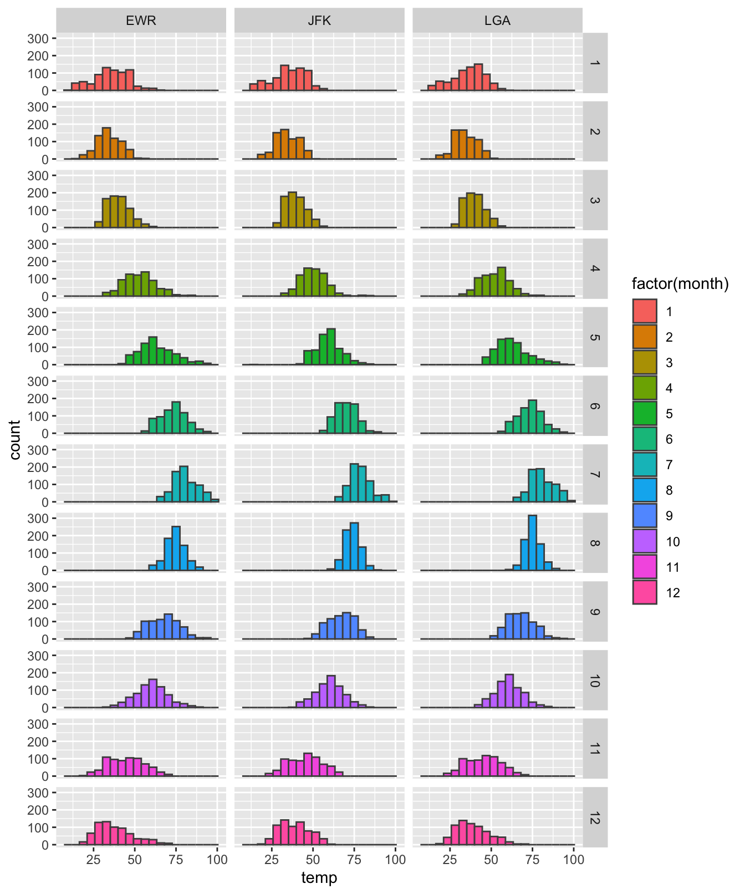
Figure 4.39: Un exemple d’utilisation de facet_grid().
Ici, nous avons utilisé la variable month (transformée en facteur) et la variable origin pour créer un histogramme pour chaque combinaison des modalités de ces 2 variables. Il est donc possible de comparer facilement des températures inter-mensuelles au sein d’un aéroport donné (en colonnes), ou de comparer des températures enregistrées le même mois dans des aéroports distincts (en lignes).
facet_grid() doit elle aussi être utilisée avec le symbole “~”. Comme pour les indices d’un tableau, on met à gauche du “~” la variable qui figurera en lignes, et à droite du ~ celle qui figurera en colonnes. Les arguments nrow et ncol ne peuvent donc pas être utilisés : c’est le nombre de niveaux de chaque variable catégorielle fournie à facet_grid() qui détermine le nombre de lignes et de colonnes du graphique.
Vous devriez maintenant être convaincus de la puissance de la grammaire des graphiques. En utilisant un langage standardisé et en ajoutant des couches une à une sur un graphique, il est posible d’obtenir rapidement des visualisations très complexes et néanmoins très claires, qui font apparaître des structures intéressantes dans nos données (des tendances, des groupes, des similitudes, des liaisons, des différences, etc.).
Quels éléments nouveaux ce graphique nous apprend-il par rapport à la Figure 4.33 ci-dessus ? Comment le “faceting” nous aide-t-il à visualiser les relations entre 2 (ou 3) variables ?
À quoi correspondent les numéros 1 à 12 ?
À quoi correspondent les chiffres 25, 50, 75, 100 ?
À quoi correspondent les chiffres 0, 100, 200, 300 ?
Observez les échelles des axes x et y pour chaque sous graphique. Qu’ont-elles de particulier ? En quoi est-ce utile ?
La variabilité des températures est-elle plus importante entre les aéroports, entre les mois, ou au sein des mois ? Expliquez votre réflexion.
4.7 Les boîtes à moustaches ou boxplots
4.7.1 Création de boxplots et informations apportées
Commençons par créer un boxplot pour comparer les températures mensuelles comme nous l’avons fait plus haut avec des histogrammes :
ggplot(weather, aes(x = month, y = temp)) +geom_boxplot()
Warning: Continuous x aesthetic
ℹ did you forget `aes(group = ...)`?
Comme précédemment, R nous avertit qu’une observation n’a pas été intégrée (en raison d’une donnée manquante). Mais il nous dit aussi que x (pour nous, la variable month) est continue, et que nous avons probablement oublié de spécifier des groupes.
En effet, les boxplots sont généralement utilisés pour examiner la distribution d’une variable numérique pour chaque niveau d’une variable catégorielle (un facteur). Il nous faut donc, ici encore, transformer month en facteur car dans notre tableau de départ, cette variable est considérée comme une variable numérique continue :
ggplot(weather, aes(x =factor(month), y = temp)) +geom_boxplot()
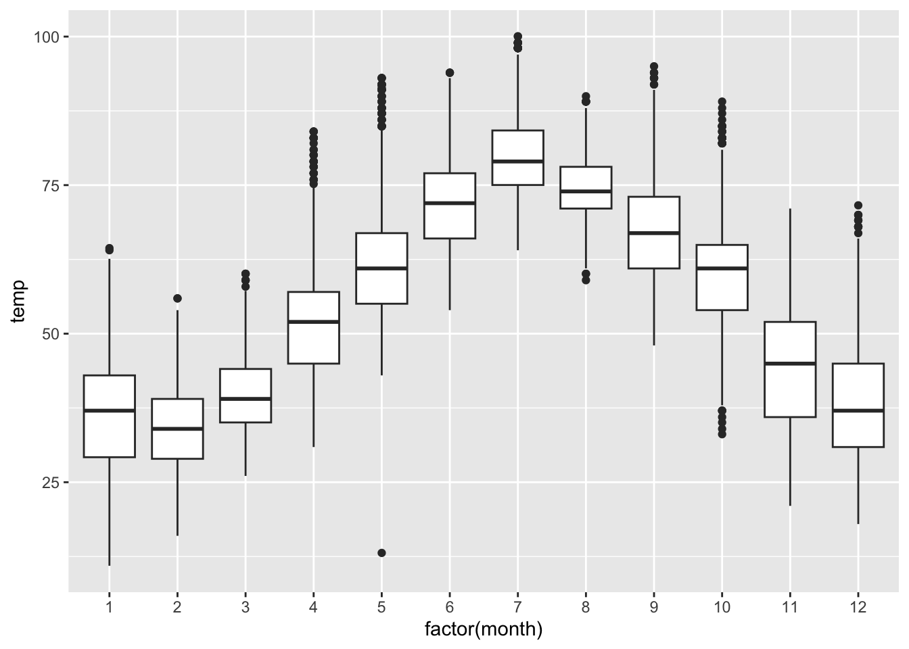
Figure 4.41: Boxplot des températures mensuelles.
Les différents éléments d’un boxplot, sont les suivants :
La limite inférieure de la boîte correspond au premier quartile : 25% des données de l’échantillon sont situées au-dessous de cette valeur.
La limite supérieure de la boîte correspond au troisième quartile : 25% des données de l’échantillon sont situées au-dessus de cette valeur.
Le segment épais à l’intérieur de la boîte correspond au second quartile : c’est la médiane de l’échantillon. 50% des données de l’échantillon sont situées au-dessus de cette valeur, et 50% au-dessous.
La hauteur de la boîte correspond à ce que l’on appelle l’étendue inter-quartile ou Inter Quartile Range (IQR) en anglais. On trouve dans cette boîte 50% des observations de l’échantillon. C’est une mesure de la dispersion des 50% des données les plus centrales. Une boîte plus allongée indique donc une plus grande dispersion.
Les moustaches correspondent à des valeurs qui sont en dessous du premier quartile (pour la moustache du bas) et au-dessus du troisième quartile (pour la moustache du haut). La règle utilisée dans R est que ces moustaches s’étendent jusqu’aux valeurs minimales et maximales de l’échantillon, mais elles ne peuvent en aucun cas s’étendre au-delà de 1,5 fois la hauteur de la boîte (1,5 fois l’IQR) vers le haut et le bas. Si des points apparaissent au-delà des moustaches (vers le haut ou le bas), ces points sont appelés “outliers”. Ce sont des points qui s’éloignent du centre de la distribution de façon importante puisqu’ils sont au-delà de 1,5 fois l’IQR de part et d’autre du premier ou du troisième quartile. Il peut s’agir d’anomalies de mesures, d’anomalies de saisie des données, ou tout simplement, d’enregistrements tout à fait valides mais extrêmes. J’attire votre attention sur le fait que la définition de ces outliers est relativement arbitraire. Nous pourrions faire le choix d’étendre les moustaches jusqu’à 1,8 fois l’IQR (ou 2, ou 2,5). Nous observerions alors beaucoup moins d’outliers. D’une façons générale, la longueur des moustaches renseigne sur la variabilité des données en dehors de la zone centrale. Plus elles sont longues, plus la variabilité est importante. Et dans tous les cas, l’examen attentif des outliers est utile car il nous permet d’en apprendre plus sur le comportement extrême de certaines observations.
4.7.2 L’intervalle de confiance à 95% de la médiane
On peut également ajouter une encoche autour de la valeur de médiane en ajoutant l’argument notch = TRUE à la fonction geom_boxplot() :
ggplot(weather, aes(x =factor(month), y = temp)) +geom_boxplot(notch =TRUE)
Figure 4.42: Boxplot des températures mensuelles. Les intervalles de confiance à 95% de la médiane sont affichés.
Comme l’indique la légende de la Figure 4.42, cette encoche correspond à l’étendue de l’intervalle de confiance à 95% de la médiane. Pour chaque échantillon, nous espérons que la médiane calculée soit le reflet fidèle de la vraie valeur de médiane de la population. Mais il sera toujours impossible d’en avoir la certitude absolue. Le mieux que l’on puisse faire, c’est quantifier l’incertitude. L’intervalle de confiance nous indique qu’il y a de bonnes chances que la vraie valeur de médiane de la population générale (qui restera à jamais inconnue) se trouve dans cet intervalle. Ici, les encoches sont très étroites car les données sont abondantes. Il y a donc peu d’incertitude, ce qui est une bonne chose. Cette notion d’intervalle de confiance est importante et ce type de graphique nous permettra d’anticiper sur les résultats des tests de comparaisons de moyennes.
4.7.3 Une autre façon d’examiner des distributions
Dernière chose concernant les boxplots : il s’agit d’une représentation graphique très proche de l’histogramme. Pour vous en convaincre, je représente à la Figure 4.43 ci-dessous uniquement les températures du mois de novembre, avec 3 types d’objets géométriques différents : un histogramme, un boxplot, et un nuage de points.
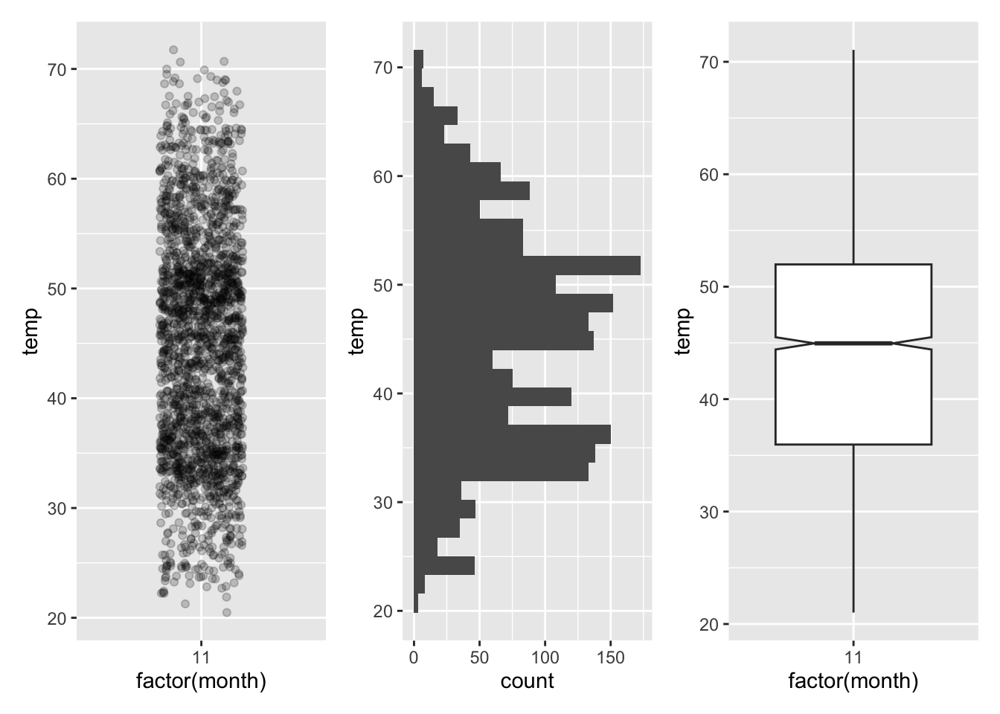
Figure 4.43: Distribution des températures de novembre 2013.
Nous avons donc, à gauche les données brutes, sous la forme d’un nuage de points créé avec geom_jitter(), au centre, un histogramme pour les températures de novembre, créé avec geom_histogram() (j’ai permuté les axes pour que y porte la température pour les 3 graphiques) et à droite, un boxplot pour ces mêmes données, créé avec geom_boxplot(). On voit bien que ces 3 représentations graphiques sont similaires. Toutes rendent compte du fait que les températures de Novembre sont majoritairement comprises entre 35 et 52 degrés Fahrenheit. Au-delà de cette fourchette (au-dessus comme en dessous) les observations sont plus rares.
Le nuage de points affiche toutes les données. C’est donc lui le plus complet mais pas forcément le plus lisible. Les points sont en effet très nombreux et la lecture du graphique peut s’en trouver compliquée. L’histogramme simplifie les données en les regroupant dans des classes. C’est une sorte de résumé des données. On constate cependant toujours la présence de 2 pics qui correspondent aux zones plus denses du nuage de points. Le boxplot enfin synthétise encore plus ces données. Elles sont résumées par 7 valeurs seulement : le minimum, le maximum, les 3 quartiles, et les bornes de l’intervalle de confiance à 95% de la médiane. C’est une représentation très synthétique qui nous permet de comparer beaucoup de catégories côte à côte (voir la Figure 4.42 un peu plus haut), mais qui est forcément moins précise qu’un histogramme. Vous noterez toutefois que la boîte du boxplot recouvre en grande partie la zone des 2 pics de l’histogramme. En outre, sur la Figure 4.42, la tendance générale est très visible : il fait plus chaud en été qu’en hiver (étonnant non ?).
4.7.4 Pour conclure
Les boîtes à moustaches permettent donc de comparer et contraster la distribution d’une variable quantitative pour plusieurs niveaux d’une variable catégorielle. On peut voir où la médiane tombe dans les différents groupes en observant la position de la ligne centrale dans la boîte. Pour avoir une idée de la dispersion de la variable au sein de chaque groupe, regardez à la fois la hauteur de la boîte et la longueur des moustaches. Quand les moustaches s’étendent loin de la boîte mais que la boîte est petite, cela signifie que la variabilité des valeurs proches du centre de la distribution est beaucoup plus faible que la variabilité des valeurs extrêmes. Enfin, les valeurs extrêmes ou aberrantes sont encore plus faciles à détecter avec une boîte à moustaches qu’avec un histogramme.
4.8 Les diagrammes bâtons
Comme nous venons de le voir, les histogrammes et les boîtes à moustaches permettent de visualiser la distribution d’une variable numérique continue. Nous aurons aussi souvent besoin de visualiser la distribution d’une variable catégorielle. C’est une tâche plus simple qui consiste à compter combien d’éléments tombent dans chacune des catégories de la variable catégorielle. Le meilleur moyen de visualiser de telles données de comptage (aka fréquences) est de réaliser un diagramme bâtons, autrement appelé barplot ou barchart.
Une difficulté, toutefois, concerne la façon dont les données sont présentées : est-ce que la variable d’intérêt est “pré-comptée” ou non ? Par exemple, le code ci-dessous crée 2 data.frame qui représentent la même collection de fruits : 3 pommes et 2 oranges :
Figure 4.45: Barplot pour des données pré-comptées.
Notez que la Figure 4.44 et la Figure 4.45 sont absolument identiques (à l’exception du titre de l’axe des ordonnées), mais qu’elles ont été créées à partir de 2 tableaux de données différents. En particulier, notez que :
Le code qui génère la Figure 4.44 utilise le jeu de données fruits, et n’associe pas de variable à l’axe des ordonnées : dans la fonction aes(), seule la variable associée à x est précisée. C’est la fonction geom_bar() qui calcule automatiquement les abondances (ou fréquences) pour chaque catégorie de la variable fruit. La variable count est ainsi générée automatiquement et associée à y.
Le code qui génère la Figure 4.45 utilise le jeu de données fruits_counted. Ici, la variable nombre est associée à l’axe des y grâce à la fonction aes(). La fonction geom_col() a besoin de 2 variables (une variable catégorielle pour l’axe des x et une numérique pour l’axe des y) pour fonctionner.
Autrement dit, lorsque vous souhaiterez créer un diagramme bâtons, il faudra donc au préalable vérifier de quel type de données vous disposez pour choisir l’objet géométrique approprié :
Si votre variable catégorielle n’est pas pré-comptée dans votre tableau de données, il faut utiliser geom_bar()
Si votre variable catégorielle est pré-comptée dans votre tableau de données, il faut utiliser geom_col() et associer explicitement les comptages à l’esthétique y du graphique.
4.8.2 Un exemple concret
Revenons à nycflights13. Imaginons que nous souhaitions connaître le nombre de vols affrétés par chaque compagnie aérienne au départ de New York en 2013. Dans le jeu de données flights, la variable carrier nous indique à quelle compagnie aérienne appartiennent chacun des 336776 vols ayant quitté New York en 2013. Une façon simple de représenter ces données est donc la suivante :
Figure 4.46: Nombre de vols par compagnie aérienne au départ de New York en 2013.
Ici, geom_bar() a compté le nombre d’occurrences de chaque compagnie aérienne dans le tableau flights et a automatiquement associé ce nombre à l’axe des ordonnées.
Il est généralement plus utile de trier les catégories par ordre décroissant. Nous pouvons faire cela facilement grâce à la fonction fct_infreq() du package forcats. Si vous avez installé le tidyverse, le package forcast doit être disponible sur votre ordinateur. N’oubliez pas de le charger si besoin :
Figure 4.47: Nombre de vols par compagnie aérienne au départ de New York en 2013.
Ordonner les catégories par ordre décroissant est souvent indispensable afin de faciliter la lecture du graphique et les comparaisons entre catégories.
Si nous souhaitons connaître le nombre de vols précis de chaque compagnie aérienne, il nous faut faire appel à plusieurs fonctions du package dplyr que nous détaillerons dans le Chapitre 6. Ci-dessous, nous créons un nouveau tableau carrier_table contenant le nombre de vols de chaque compagnie aérienne et les compagnies sont ordonnées par nombres de vols décroissants :
carrier_table <- flights |># On prend flights, puis...group_by(carrier) |># On groupe les données par compagnie, puis...summarize(nombre =n()) |># On calcule le nb de vols par Cie, puis ...arrange(desc(nombre)) # On trie par nb de vols décroissants ...carrier_table # Enfin, on affiche la nouvelle table
# A tibble: 16 × 2
carrier nombre
<chr> <int>
1 UA 58665
2 B6 54635
3 EV 54173
4 DL 48110
5 AA 32729
6 MQ 26397
7 US 20536
8 9E 18460
9 WN 12275
10 VX 5162
11 FL 3260
12 AS 714
13 F9 685
14 YV 601
15 HA 342
16 OO 32
Ici, la table a été triée par nombres de vols décroissants. Mais attention, les niveaux du facteur carrier n’ont pas été modifiés :
factor(carrier_table$carrier)
[1] UA B6 EV DL AA MQ US 9E WN VX FL AS F9 YV HA OO
Levels: 9E AA AS B6 DL EV F9 FL HA MQ OO UA US VX WN YV
Le premier niveau est toujours 9E, puis AA, puis AS, et non l’ordre du tableau nouvellement créé (UA, puis B6, puis EV…) car les niveaux sont toujours triés par ordre alphabétique. La conséquence est que faire un barplot avec ces données et la fonction geom_col() ne permet pas d’ordonner les catégories correctement :
ggplot(carrier_table, aes(x = carrier, y = nombre)) +geom_col()
Figure 4.48: Nombre de vols par compagnie aérienne au départ de New York en 2013.
Pour parvenir à nos fins, il faut cette fois avoir recours à la fonction fct_reorder() pour ordonner correctement les catégories. Cette fonction prends 3 arguments :
La variable catégorielle dont on souhaite réordonner les niveaux (ici, la variable carrier du tableau carrier_table).
Une variable numérique qui permet d’ordonner les catégories (ici, la variable nombre du même tableau).
L’argument optionnel .desc qui permet de préciser si le tri doit être fait en ordre croissant (c’est le cas par défaut) ou décroissant.
ggplot(carrier_table, aes(x =fct_reorder(carrier, nombre, .desc =TRUE), y = nombre)) +geom_col()
Figure 4.49: Nombre de vols par compagnie aérienne au départ de New York en 2013.
Vous voyez donc que selon le type de données dont vous disposez (soit un tableau comme flights, avec toutes les observations, soit un tableau beaucoup plus compact comme carrier_table), la démarche permettant de produire un diagramme bâtons, dans lequel les catégories seront triées, sera différente.
4.8.3 Exercices
Quelle est la différence entre un histogramme et un diagramme bâtons ?
Pourquoi les histogrammes sont-ils inadaptés pour visualiser des données catégorielles ?
Quel est le nom de la compagnie pour laquelle le plus grand nombre de vols ont quitté New York en 2013 (je veux connaître son nom, pas juste son code) ? Où se trouve cette information ?
Quel est le nom de la compagnie pour laquelle le plus petit nombre de vols ont quitté New York en 2013 (je veux connaître son nom, pas juste son code) ? Où se trouve cette information ?
4.8.4 Éviter à tout prix les diagrammes circulaires
À mon grand désarroi, l’un des graphiques les plus utilisé pour représenter la distribution d’une variable catégorielle est le diagramme circulaire (ou diagramme camembert, piechart en anglais). C’est presque toujours la plus mauvaise visualisation possible. Je vous demande de l’éviter à tout prix. Notre cerveau n’est en effet pas correctement équipé pour comparer des angles. Ainsi, par exemple, nous avons naturellement tendance à surestimer les angles supérieurs à 90º, et à sous-estimer les angles inférieurs à 90º. En d’autres termes, il est difficile pour les humains de comparer des grandeurs sur des diagrammes circulaires.
À titre d’exemple, examinez ce diagramme, qui reprend les mêmes chiffres que précédemment, et tentez de répondre aux questions suivantes :
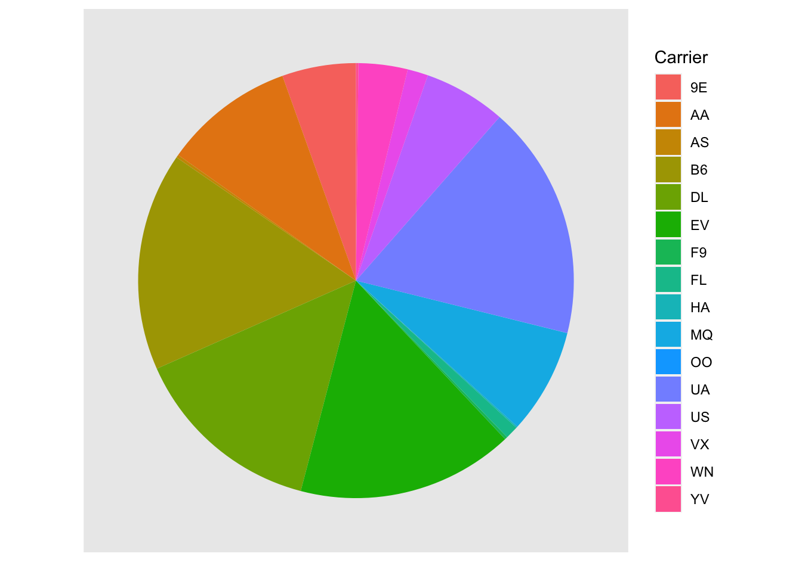
Figure 4.50: Nombre de vols par compagnie aérienne au départ de New York en 2013.
Comparez les compagnies ExpressJet Airlines (EV) et US Airways (US). De combien de fois la part de EV est-elle supérieure à celle d’US ? (2 fois, 3 fois, 1.2 fois ?…)
Quelle est la troisième compagnie aérienne la plus importante en terme de nombre de vols au départ de New York en 2013 ?
Combien de compagnies aériennes ont moins de vols que United Airlines (UA) ?
Il est difficile (voir impossible) de répondre précisément à ces questions avec le diagramme circulaire de la Figure 4.50, alors qu’il est très simple d’obtenir des réponses précises avec un diagramme bâtons tel que présenté à la Figure 4.49 (vérifiez-le !).
4.8.5 Comparer 2 variables catégorielles avec un diagramme bâton
Il y a généralement 3 façons de procéder pour comparer la distribution de 2 variables catégorielles avec un diagramme bâtons :
Faire un graphique empilé.
Faire un graphique juxtaposé.
Utiliser les facets.
Supposons par exemple que nous devions visualiser le nombre de vols de chaque compagnie aérienne, au départ de chacun des 3 aéroports de New York : John F. Kennedy (JFK), Newark (EWR) et La Guardia (LGA). Voyons comment procéder avec chacune des 3 méthodes énoncées ci-dessus.
4.8.5.1 Graphique empilé
La méthode la plus simple est celle du graphique empilé :
ggplot(flights, aes(x =fct_infreq(carrier), fill = origin)) +geom_bar()
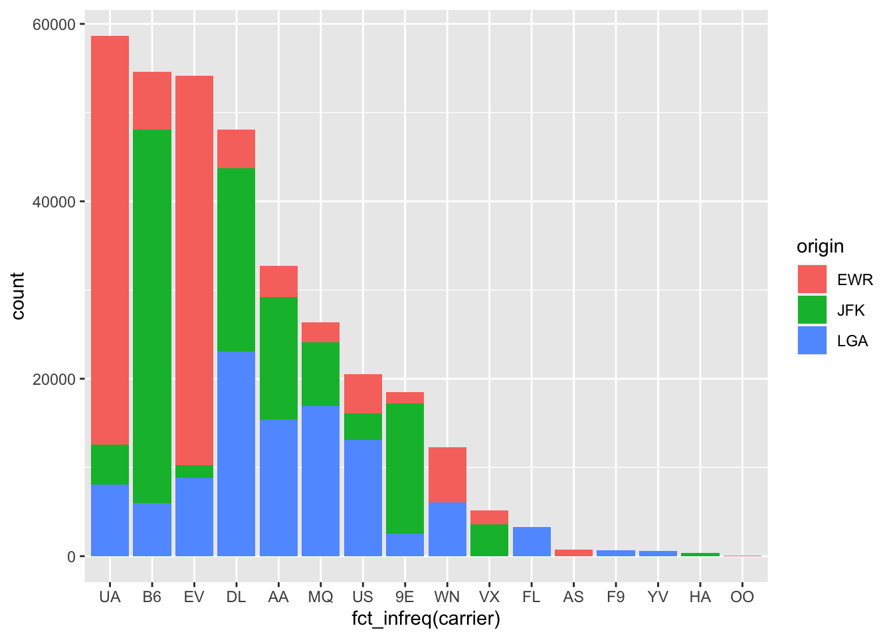
Figure 4.51: Nombre de vols par compagnie aérienne au départ des 3 aéroports de New York en 2013.
Notez qu’il s’agit du même code que celui utilisé pour la Figure 4.47, à une différence près : l’ajout de fill = origin dans la fonction aes(), qui permet d’associer l’aéroport d’origine à la couleur de remplissage des barres. fill est associé à une variable (ici, elle est catégorielle), il est donc indispensable de faire figurer cet argument à l’intérieur de la fonction aes(). Quand on associe une variable à une caractéristique esthétique du graphique, on fait toujours figurer le code à l’intérieur de la fonction aes() (comme quand on associe une variable aux axes du graphique par exemple).
À mon sens, le graphique gagne en lisibilité si on ajoute une couleur pour le contour des barres :
ggplot(flights, aes(x =fct_infreq(carrier), fill = origin)) +geom_bar(color ="black")
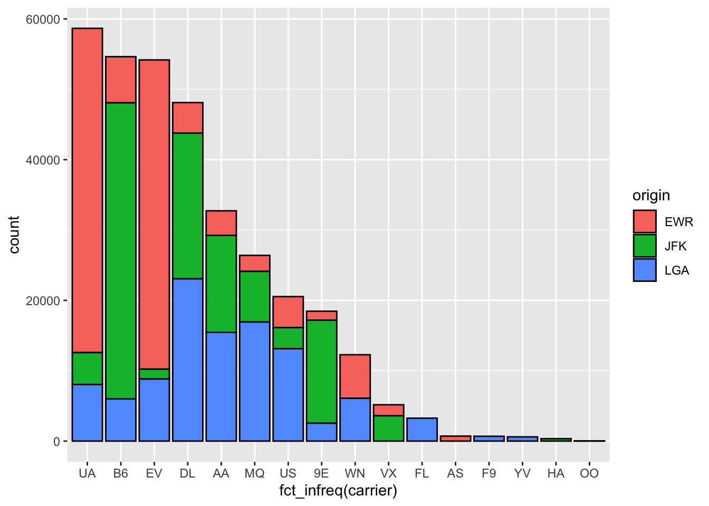
Figure 4.52: Nombre de vols par compagnie aérienne au départ des 3 aéroports de New York en 2013.
Notez que contrairement à fill, cette couleur de contour est un paramètre fixe : elle n’est pas associée à une variable et doit donc être placée en dehors de la fonction aes().
Bien que ces graphiques empilés soient très simples à réaliser, ils sont parfois difficiles à lire. En particulier, il n’est pas toujours aisé de comparer les hauteurs des différentes couleurs (qui correspondent ici aux nombres de vols issus de chaque aéroport) entre barres différentes (qui correspondent ici aux compagnies aériennes).
4.8.5.2 Graphique juxtaposé
Une variation sur le même thème consiste, non plus à empiler les barres de couleur les unes sur les autres, mais à les juxtaposer :
ggplot(flights, aes(x =fct_infreq(carrier), fill = origin)) +geom_bar(color ="black", position ="dodge")
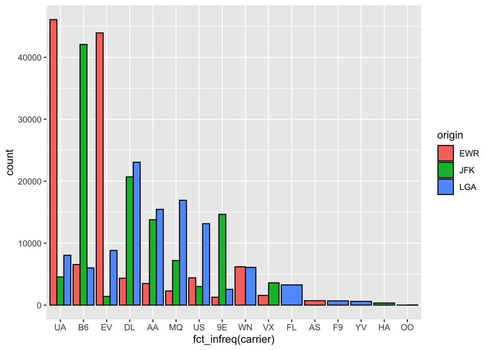
Figure 4.53: Nombre de vols par compagnie aérienne au départ des 3 aéroports de New York en 2013.
Passer d’un graphique empilé à un graphique juxtaposé est donc très simple : il suffit d’ajouter l’argument position = "dodge" à la fonction geom_bar().
Là encore, la lecture de ces graphiques est souvent difficile car la comparaison des catégories qui figurent sur l’axe des x n’est pas immédiate. Elle est en outre rendue plus difficile par le fait que toutes les barres n’ont pas la même largeur. Par exemple, sur la Figure 4.53, les 8 premières compagnies aériennes desservent les 3 aéroports de New York, mais les 2 suivantes (WN et VX) n’en desservent que 2, et les autres compagnies, qu’un seul. Puisque sur un barplot, seule la hauteur des barres compte, il faut prendre garde à ne pas se laisser influencer par la largeur des barres qui pourraient fausser notre perception.
4.8.5.3 Utilisation des facets
La meilleure alternative est probablement l’utilisation de facets que nous avons déjà décrite à la Section 4.6 :
Figure 4.54: Nombre de vols par compagnie aérienne au départ des 3 aéroports de New York en 2013.
Ici, chaque graphique permet de comparer les compagnies aériennes au sein de l’un des aéroports de New York, et puisque l’ordre des compagnies aériennes est le même sur l’axe des x des 3 graphiques, une lecture verticale permet de comparer aisément le nombre de vols qu’une compagnie donnée a affrété dans chacun des 3 aéroports de New York.
4.9 De l’exploration à l’exposition
Vous savez maintenant comment produire une grande variété de graphiques, permettant d’explorer vos données, de visualiser le comportement d’une ou plusieurs variables, et de mettre en évidence des tendances, des relations entre variables numériques et/ou catégorielles. Outre les objets géométriques décrits jusqu’ici, ggplot2 contient de nombreuses possibilités supplémentaires pour créer des graphiques parlants et originaux. Je ne peux donc que vous encourager à explorer par vous même les autres possibilités de ce package. Lorsque vous produisez un graphique parlant et permettant de véhiculer un message clair, vous devez ensuite rendre vos graphiques plus présentables afin de les intégrer dans un rapport ou une présentation. Cette section vous permettra de vous familiariser avec quelques fonctions permettant d’annoter correctement vos graphiques et d’en modifier les légendes si nécessaire.
4.9.1 Les labels
Le point de départ le plus évident est d’ajouter des labels de qualité. La fonction labs() du package ggplot2 permet d’ajouter plusieurs types de labels sur vos graphiques :
Un titre : il doit résumer les résultats les plus importants.
Un sous-titre : il permet de donner quelques détails supplémentaires.
Une légende : souvent utilisée pour présenter la source des données du graphique.
Un titre pour chaque axe : permet de préciser les variables portées par les axes et leurs unités.
Un titre pour les légendes de couleurs, de forme, de taille, etc.
Reprenons par exemple le graphique de la Figure 4.9 :
ggplot(alaska_flights, aes(x = dep_delay, y = arr_delay, color =factor(month))) +geom_point()
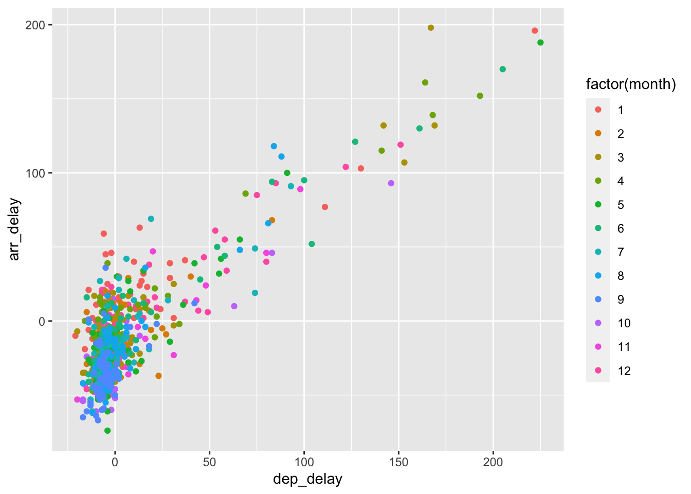
Figure 4.55: Association de color à une variable catégorielle.
Nous pouvons ajouter sur ce graphique les éléments précisés plus haut en ajoutant la fonction labs() sur une nouvelle couche du graphique :
ggplot(alaska_flights, aes(x = dep_delay, y = arr_delay, color =factor(month))) +geom_point() +labs(title ="Relation linéaire positive entre retard des vols au départ et à l'arrivée",subtitle ="Certains retards dépassent 3 heures",caption ="Source : nycflights13",x ="Retard au départ de New York (minutes)",y ="Retard à l'arrivée à destination (minutes)",color ="Mois")
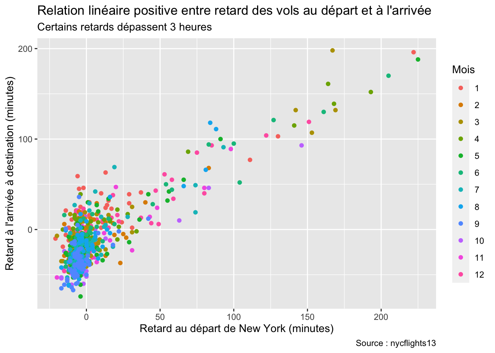
Figure 4.56: Exemple d’utilisation de labs()
À partir de maintenant, vous devriez systématiquement légender les axes de vos graphiques en n’oubliant pas de préciser les unités, pour tous les graphiques que vous intégrez dans vos rapports, compte-rendus, mémoires, etc.
4.9.2 Les échelles
Tous les détails des graphiques que vous produisez peuvent être édités. C’est notamment le cas des échelles. Qu’il s’agisse de modifier l’étendue des axes, la densité du quadrillage, la position des tirets sur les axes, le nom des catégories figurant sur les axes ou dans les légendes ou encore les couleurs utilisées pour différentes catégories d’objets géométriques, tout est possible dans ggplot2.
Nous n’avons pas le temps ici d’aborder toutes ces questions en détail. Je vous encourage donc à consulter l’ouvrage en ligne intitulé R for data science, et en particulier son chapitre dédié aux échelles, si vous avez besoin d’apporter des modifications à vos graphiques et que vous ne trouvez pas comment faire dans cet ouvrage.
Je vais ici uniquement détailler la façon de procéder pour modifier les couleurs choisies par défaut par ggplot2. Reprenons par exemple la Figure 4.54, en ajoutant au passage des titres corrects pour nos axes
ggplot(flights, aes(x =fct_infreq(carrier), fill = origin)) +geom_bar(color ="black") +facet_wrap(~origin, ncol =1) +labs(x ="Compagnie aérienne",y ="Nombre de vols",fill ="Aéroports\nde New York")
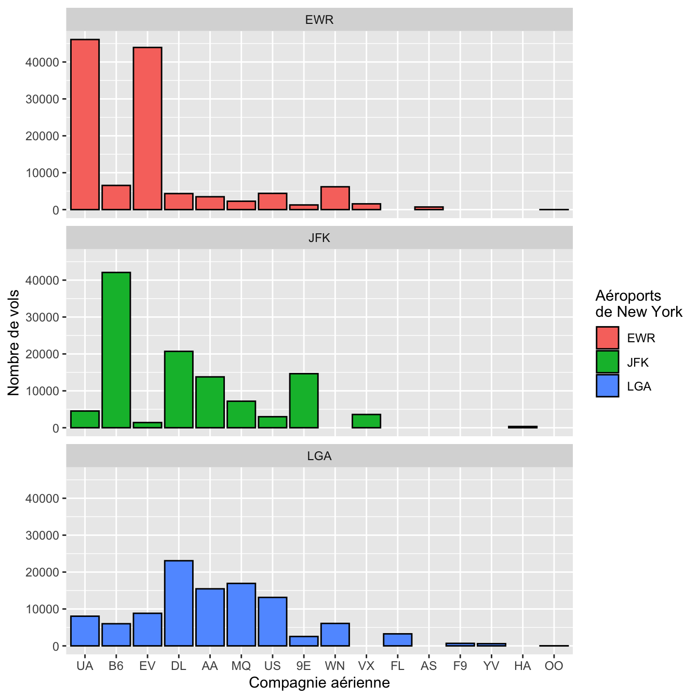
Figure 4.57: Nombre de vols par compagnie aérienne au départ des 3 aéroports de New York en 2013.
Notez que le caractère spécial “\n” permet de forcer un retour à la ligne. Ici, les 3 couleurs de remplissage (fill) utilisées pour différencier les 3 aéroports de New York ont été choisies par défaut par ggplot2. Il est possible de modifier ces couleurs de plusieurs façons :
En utilisant d’autres palettes de couleurs prédéfinies.
En utilisant des couleurs choisies manuellement.
Toutes les fonctions permettant d’altérer les légendes commencent par scale_. Vient ensuite le nom de l’esthétique que l’on souhaite modifier (ici fill_) et enfin, le nom d’une fonction à appliquer. Les possibilités sont nombreuses et vous pouvez en avoir un aperçu en tapant le début du nom de la fonction et en parcourant la liste proposée par RStudio sous le curseur.
Par exemple, pour utiliser des niveaux de gris plutôt que les couleurs, il suffit d’ajouter une couche à notre graphique :
ggplot(flights, aes(x =fct_infreq(carrier), fill = origin)) +geom_bar(color ="black") +facet_wrap(~origin, ncol =1) +labs(x ="Compagnie aérienne",y ="Nombre de vols",fill ="Aéroports\nde New York") +scale_fill_grey()
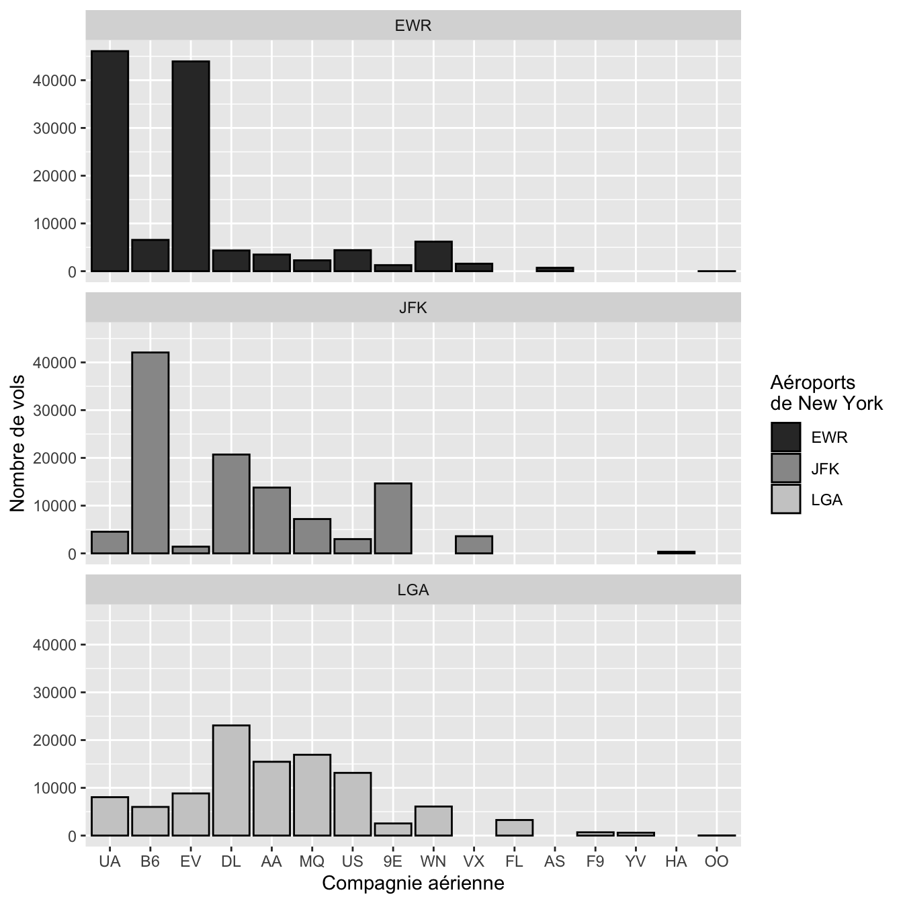
Figure 4.58: Nombre de vols par compagnie aérienne au départ des 3 aéroports de New York en 2013.
Le package RColorBrewer propose une large gamme de palettes de couleurs (Figure 4.59) :
Figure 4.59: Toutes les palettes de couleur du package RColorBrewer.
ggplot2 permet d’appliquer ces palettes très simplement :
ggplot(flights, aes(x =fct_infreq(carrier), fill = origin)) +geom_bar(color ="black") +facet_wrap(~origin, ncol =1) +labs(x ="Compagnie aérienne",y ="Nombre de vols",fill ="Aéroports\nde New York") +scale_fill_brewer(palette ="Accent")
Figure 4.60: Nombre de vols par compagnie aérienne au départ des 3 aéroports de New York en 2013.
De même, le package viridis propose une palette de couleurs intéressante qui maximise le contraste et facilite la discrimination des catégories pour les daltoniens. Là encore, ggplot2 nous donne accès à cette palette :
ggplot(flights, aes(x =fct_infreq(carrier), fill = origin)) +geom_bar(color ="black") +facet_wrap(~origin, ncol =1) +labs(x ="Compagnie aérienne",y ="Nombre de vols",fill ="Aéroports\nde New York") +scale_fill_viridis_d()
Figure 4.61: Nombre de vols par compagnie aérienne au départ des 3 aéroports de New York en 2013.
Enfin, si les palettes de couleurs ne conviennent pas, il est toujours possible de spécifier manuellement les couleurs souhaitées. R propose un accès rapide à 657 noms de couleurs. Pour les afficher, il suffit de taper :
colors()
Pour savoir à quelle couleur correspond chaque nom, le plus simple est probablement de consulter ce document pdf (n’hésitez pas à le sauvegarder si vous pensez en avoir besoin plus tard).
ggplot(flights, aes(x =fct_infreq(carrier), fill = origin)) +geom_bar(color ="black") +facet_wrap(~origin, ncol =1) +labs(x ="Compagnie aérienne",y ="Nombre de vols",fill ="Aéroports\nde New York") +scale_fill_manual(values =c("dodgerblue1", "mediumorchid2", "red2"))
Figure 4.62: Nombre de vols par compagnie aérienne au départ des 3 aéroports de New York en 2013.
Outre ces 657 couleurs qui disposent d’un nom spécifique, il est possible de spécifier les couleurs en utilisant des codes hexadécimaux et des codes rgb (red, green, blue). De nombreux sites permettent de choisir n’importe quelle couleur dans une palette qui en compte des millions et d’obtenir de tels codes. Ce site permet de le faire très simplement :
ggplot(flights, aes(x =fct_infreq(carrier), fill = origin)) +geom_bar(color ="black") +facet_wrap(~origin, ncol =1) +labs(x ="Compagnie aérienne",y ="Nombre de vols",fill ="Aéroports\nde New York") +scale_fill_manual(values =c("#6f71f2", "#6ff299", "#f2b86f"))
Figure 4.63: Nombre de vols par compagnie aérienne au départ des 3 aéroports de New York en 2013.
Dernière chose concernant les couleurs : un choix de fonction scale_XXX_XXX() inapproprié est la cause d’erreur la plus fréquente ! Par exemple, si on reprend le code des figures Figure 4.9 et Figure 4.10 et que l’on modifie les palettes de couleurs, notez que les fonctions utilisées ne sont pas les mêmes :
ggplot(data = alaska_flights, mapping =aes(x = dep_delay, y = arr_delay, color =factor(month))) +geom_point() +scale_color_viridis_d()
Figure 4.64: Association de color à une variable catégorielle.
ggplot(data = alaska_flights, mapping =aes(x = dep_delay, y = arr_delay, color = arr_time)) +geom_point() +scale_color_viridis_c()
Figure 4.65: Association de color à une variable numérique.
Pour les 2 figures 4.64 et 4.65, j’utilise la palette de couleur viridis. Pour ces 2 graphiques, c’est la couleur des points qui change. Puisque cette couleur est spécifiée avec l’esthétique color et non plus fill, la fonction utilisée est scale_color_XXX() et non plus scale_fill_XXX().
Enfin, pour la Figure 4.64, c’est une variable catégorielle qui est associée à l’esthétique de couleur (factor(month)). La fonction utilisée pour modifier les couleurs doit donc en tenir compte : le _d à la fin de scale_color_viridis_d() signifie “discrete”, c’est-à-dire “discontinue”. À l’inverse, pour la Figure 4.65, c’est une variable numérique continue qui est associée à l’esthétique de couleur (arr_time). La fonction utilisée pour modifier les couleurs en est le reflet : le _c à la fin de scale_color_viridis_c() est l’abréviation de “continuous”, c’est-à-dire “continue”.
Si vous ne voulez pas avoir de message d’erreur, attention donc, à choisir la fonction scale_XXX_XXX() appropriée. Pour cela, servez-vous de l’aide que RStudio vous apporte en tapant les premières lettres de la fonction et en parcourant la liste des fonctions proposées dans le menu déroulant qui apparaît sous votre curseur.
4.9.3 Les thèmes
L’apparence de tout ce qui ne concerne pas directement les données d’un graphique est sous le contrôle d’un thème. Les thèmes contrôlent l’apparence générale du graphique : quelles polices et tailles de caractères sont utilisées, quel sera l’arrière plan du graphique, faut-il intégrer un quadrillage sous le graphique, et si oui, quelles doivent être ses caractéristiques ?
Il est possible de spécifier chaque élément manuellement. Nous nous contenterons ici de passer en revue quelques thèmes prédéfinis qui devraient couvrir la plupart de vos besoins.
Reprenons par exemple le code de la Figure 4.60 et ajoutons un titre :
ggplot(flights, aes(x =fct_infreq(carrier), fill = origin)) +geom_bar(color ="black") +facet_wrap(~origin, ncol =1) +labs(x ="Compagnie aérienne",y ="Nombre de vols",fill ="Aéroports de\nNew York",title ="Couverture inégale des aéroports de New York") +scale_fill_brewer(palette ="Accent")
Figure 4.66: Utilisation du thème par défaut : theme_gray()
Le thème utilisé par défaut est theme_gray(). Il est notamment responsable de l’arrière plan gris et du quadrillage blanc. Pour changer de thème, il suffit d’ajouter une couche au graphique en donnant le nom du nouveau thème :
ggplot(flights, aes(x =fct_infreq(carrier), fill = origin)) +geom_bar(color ="black") +facet_wrap(~origin, ncol =1) +labs(x ="Compagnie aérienne",y ="Nombre de vols",fill ="Aéroports de\nNew York",title ="Couverture inégale des aéroports de New York") +scale_fill_brewer(palette ="Accent") +theme_bw()
Figure 4.67: Utilisation du thème theme_bw()
Les thèmes complets que vous pouvez utiliser sont les suivants :
theme_bw() : fond blanc et quadrillage.
theme_classic() : thème classique, avec des axes mais pas de quadrillage.
theme_dark() : fond sombre pour augmenter le contraste.
theme_gray() : thème par défaut : fond gris et quadrillage blanc.
theme_light() : axes et quadrillages discrets.
theme_linedraw() : uniquement des lignes noires.
theme_minimal() : pas d’arrière plan, pas d’axes, quadrillage discret.
theme_void() : thème vide, seuls les objets géométriques restent visibles.
ggplot(flights, aes(x =fct_infreq(carrier), fill = origin)) +geom_bar(color ="black") +facet_wrap(~origin, ncol =1) +labs(x ="Compagnie aérienne",y ="Nombre de vols",fill ="Aéroports de\nNew York",title ="Couverture inégale des aéroports de New York") +scale_fill_brewer(palette ="Accent") +theme_minimal()
Figure 4.68: Utilisation du thème minimaliste
L’argument base_family de chaque thème permet de spécifier une police de caractères différente de celle utilisée par défaut. Évidemment, vous ne pourrez utiliser que des polices qui sont disponibles sur l’ordinateur que vous utilisez. Dans l’exemple de la ?fig-themefont ci-dessous, j’utilise la police “Gill Sans”. Si cette police n’est pas disponible sur votre ordinateur, ce code produira une erreur. Si c’est le cas, remplacez-la par une police de votre ordinateur. Attention, son nom exact doit être utilisé. Cela signifie bien sûr le respect des espaces, majuscules, etc.
ggplot(flights, aes(x =fct_infreq(carrier), fill = origin)) +geom_bar(color ="black") +facet_wrap(~origin, ncol =1) +labs(x ="Compagnie aérienne",y ="Nombre de vols",fill ="Aéroports de\nNew York",title ="Couverture inégale des aéroports de New York") +scale_fill_brewer(palette ="Accent") +theme_minimal(base_family ="Gill Sans")
Le choix d’un thème et d’une police adaptés doivent vous permettre de faire des graphiques originaux et clairs. Rappelez-vous toujours que vos choix en matière de graphiques doivent avoir pour objectif principal de rendre les tendances plus faciles à décrypter pour un lecteur non familier de vos données. C’est un outil de communication au même titre que n’importe quel paragraphe d’un rapport ou compte-rendu. Et comme pour un paragraphe, la première version d’un graphique est rarement la bonne.
Vous devriez donc maintenant être bien armés pour produire 95% des graphiques dont vous aurez besoin tout au long de votre cursus universitaire. Toutefois, un point important a pour l’instant été omis : l’ajout de barres d’erreurs sur vos graphiques. Nous verrons comment faire cela un peu plus tard, après avoir appris à manipuler efficacement des tableaux de données avec les packages tidyr et dplyr.
4.10 Exercices
Commencez par créer un nouveau jeu de données en exécutant ces commandes :
Ce nouveau jeu de données de petite taille (969 lignes) est nommé small_flights. Il contient les mêmes variables que le tableau flights mais ne contient qu’une petite fraction de ses lignes. Les lignes retenues ont été choisies au hasard. Vous pouvez visualiser son contenu en tapant son nom dans la console ou en utilisant la fonction View().
En vous appuyant sur les fonctions et les principes de la grammaire des graphiques que vous avez découverts dans ce chapitre 4, et en vous servant de ce nouveau jeu de données, tapez les commandes qui permettent de produire le graphique ci-dessous :
Figure 4.69: Première figure à reproduire
Quelques indices :
Les couleurs utilisées sont celles de la palette Set1 du package RColorBrewer.
Les variables utilisées sont origin, air_time et distance.
La transparence des symboles est fixée à 0.8.
Toujours avec ce jeu de données small-flights, tapez les commandes permettant de produire le graphique ci-dessous :
Figure 4.70: Seconde figure à reproduire
Quelques indices :
Les couleurs utilisées sont celles de la palettes Accent du package RColorBrewer.
Les variables utilisées sont month, carrier et origin.
Wickham, Hadley, Winston Chang, Lionel Henry, Thomas Lin Pedersen, Kohske Takahashi, Claus Wilke, Kara Woo, Hiroaki Yutani, et Dewey Dunnington. 2023. ggplot2: Create Elegant Data Visualisations Using the Grammar of Graphics. https://CRAN.R-project.org/package=ggplot2.